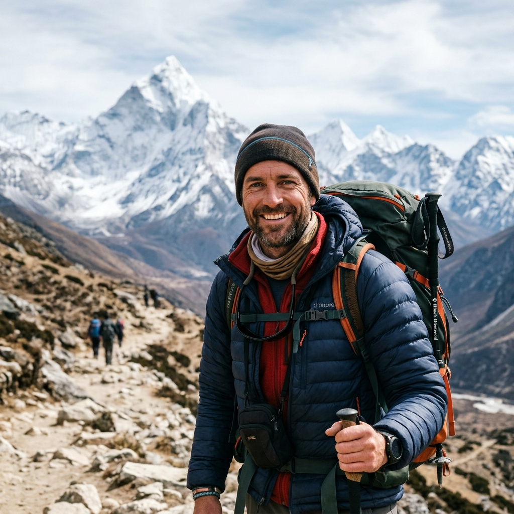
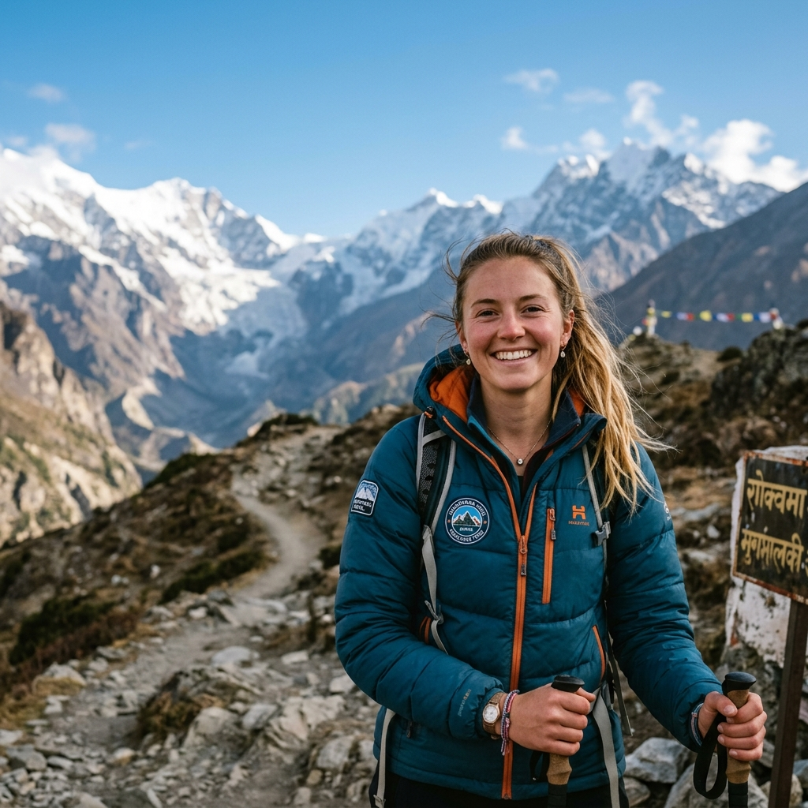
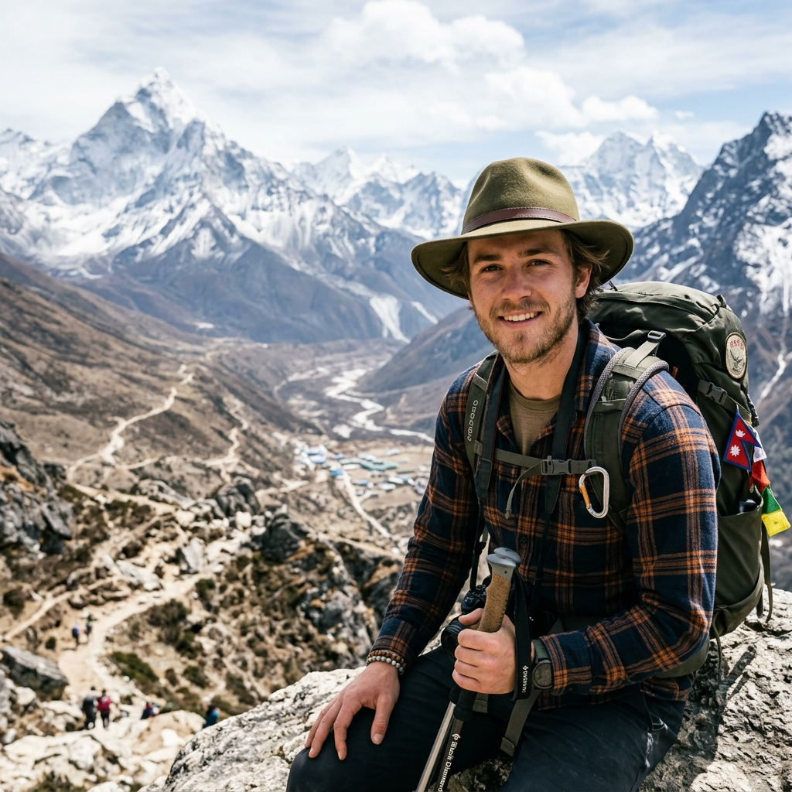
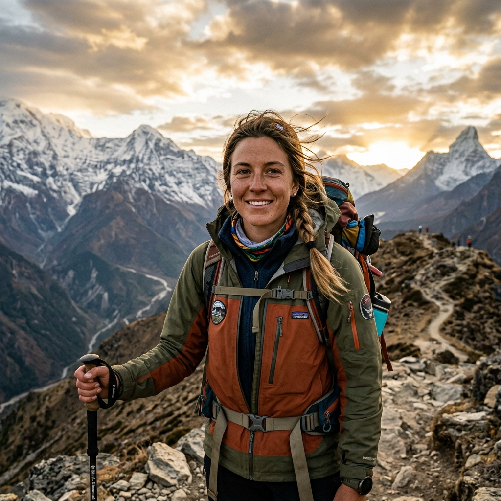

Our Everest Base Camp trek with Namaste Hiking Trek went beyond every expectation we had. What first pulled us towards them was their strict safety protocol and personal care. From the landing at Lukla to reaching Everest Base Camp (5,364m) and Kala Patthar, Sagar and the team made sure we were comfortable, safe, and hydrated every single day!
Everest Region • Classic Himalayan Expedition
5.0
reviews on TripAdvisor
5.0
169 reviews on Google
Everest Base Camp Trek
Embark on a legendary 14-day journey to the foot of Mount Everest. Traverse spectacular suspension bridges, hike through vibrant Sherpa villages, visit the historic Tengboche Monastery, and stand on the iconic Khumbu Glacier at Everest Base Camp (5,364m) before watching a golden sunrise from Kala Patthar (5,545m).

Travelers' Choice
Best of the Best 2026


Key Trip Facts
Duration
14 days
Difficulty
Moderate
Max Altitude
5,545 m
Destination
Nepal
Activity
Trekking
Accommodation
Hostels & Guesthouses
Transport
Both way Flight
Meals
B.D.L.
Season
Sep-October & Mar-May
Trek Starts
Lukla
Trek End At
Lukla
Trek Region
Everest
Package Start Point
Kathmandu
Package End Point
Kathmandu
Trek Overview
The Everest Base Camp Trek is a high-altitude journey through the heart of Nepal’s Khumbu region, taking you from the mountain gateway of Lukla through Sherpa villages, Buddhist monasteries, glacial valleys and some of the most recognizable Himalayan scenery in the world. The classic route leads through Phakding, Namche Bazaar, Tengboche, Pangboche, Dingboche, Lobuche and Gorak Shep before reaching Everest Base Camp at 5,364 m (17,598 ft) and ascending Kala Patthar at about 5,545 m (18,192 ft) for the clearest panoramic view of Mount Everest.
This is a trek to Everest Base Camp, not a climb of Mount Everest. The summit of Everest stands at 8,848.86 m, while the trek takes you into the high Himalayan environment beneath the world's highest mountain. From Base Camp, Everest itself is partly hidden by the surrounding peaks, particularly Nuptse. The classic Everest view comes from Kala Patthar, where Everest, Lhotse, Nuptse, Pumori, and other Himalayan giants form the skyline.
The journey is as much about reaching the destination as it is about experiencing the landscape and communities along the way. You cross suspension bridges over the Dudh Koshi, enter Sagarmatha National Park, walk through rhododendron and alpine landscapes, pass mani walls and prayer wheels, and spend nights in locally operated mountain teahouses. At Namche Bazaar, the traditional trading centre of the Khumbu, and Tengboche, home to one of the region's best-known Buddhist monasteries, the trail becomes a meeting point between Himalayan nature, Sherpa culture and modern trekking life. Sagarmatha National Park is also a UNESCO World Heritage Site, recognized for its exceptional mountain, glacier, and valley landscapes and its close connection with Sherpa culture.
The standard Everest Base Camp trekking itinerary takes around 12–14 days from Lukla and back, depending on the route and logistics. A well-paced itinerary includes dedicated acclimatization in Namche Bazaar and Dingboche rather than treating the trek as a race to Base Camp. Nepal Tourism Board describes the classic route as a roughly two-week journey beginning and ending at Lukla, with acclimatization around Namche and Dingboche before the trail continues toward Lobuche, Gorak Shep and Everest Base Camp.
What the Everest Base Camp Trek is really like?
Expect approximately 5–7 hours of walking on most trekking days, with a combination of gradual trails, stone steps, suspension bridges, steep climbs and long descents. The terrain is not technical mountaineering, but the altitude makes ordinary walking considerably more demanding. The challenge increases as you move above Namche, particularly on the approach to Lobuche, Gorak Shep and Kala Patthar.
You do not need to be an elite athlete or experienced mountaineer to undertake an EBC hike. You do, however, need enough endurance to walk for several consecutive days at altitude, cope with uneven Himalayan terrain and follow a gradual acclimatization schedule. Fitness helps with the physical demands, but altitude adaptation cannot simply be replaced by fitness. That is why the itinerary deliberately builds in acclimatization and why your pace should become slower rather than faster as you gain elevation.
Altitude is one of the defining characteristics of this trek. You begin around 2,860 m at Lukla and eventually sleep above 5,000 m at Gorak Shep, with Kala Patthar taking you substantially higher for the day. Symptoms of altitude sickness can become a serious concern above 3,000 m, so hydration, gradual ascent, adequate rest and immediate communication with your guide about unusual symptoms are essential. Nepal Tourism Board specifically advises high-altitude trekkers to understand Acute Mountain Sickness, avoid alcohol above 3,000 m and follow designated routes and responsible trekking practices.
From Lukla to Everest Base Camp
For the classic route, the adventure starts with the journey to Lukla, often described as the gateway to the Everest region. From Lukla, the trail follows the Dudh Koshi valley toward Phakding and Monjo, then climbs toward Namche Bazaar. After acclimatizing around Namche, the route continues toward Tengboche and Dingboche, where the forest gradually gives way to a stark alpine environment.
Beyond Dingboche, the landscape becomes increasingly dominated by rock, moraine, glaciers and high mountain walls. The trail passes Lobuche and the Thukla memorials before reaching Gorak Shep, the final settlement before Everest Base Camp. From here, trekkers make the excursion to Base Camp and, depending on the itinerary and conditions, climb Kala Patthar for the defining Everest viewpoint. The Nepal Tourism Board identifies this sequence; Lukla, Namche, Tengboche, Dingboche/Pheriche, Lobuche, Gorak Shep, Everest Base Camp and Kala Patthar as the classic Everest Base Camp route.
More than a mountain trek
One of the reasons the EBC Trek in Nepal remains so distinctive is that the mountain scenery is inseparable from the people and culture of the Khumbu. Sherpa settlements, Buddhist monasteries, chortens, prayer flags, mani walls and teahouses are part of the route rather than attractions added around it. UNESCO describes the Sherpa cultural heritage of Sagarmatha as an integral part of the area's outstanding natural and cultural value.
You will also encounter an extraordinary Himalayan panorama throughout the route, including Ama Dablam, Thamserku, Kangtega, Lhotse, Nuptse, Pumori, Lobuche, Cholatse, Island Peak and Everest. The scenery changes dramatically from green river valleys and pine-rhododendron forests near Lukla to the exposed moraine and glacier landscapes above the tree line.
Is the Everest Base Camp Trek right for you?
The answer depends less on whether you have climbed mountains before and more on whether you are prepared for sustained walking, high altitude, basic mountain accommodation and changing weather.
The trek is a strong choice for first-time high-altitude trekkers who are willing to prepare properly and follow an acclimatization-focused itinerary. Experienced hikers may find the terrain familiar but should still respect the altitude. Families, older trekkers and solo travelers can also undertake the journey with appropriate preparation and professional support.
For foreign trekkers, the Nepal Tourism Board currently lists the Everest Base Camp Trek among the Everest-region routes requiring a licensed trekking guide and agency-issued TIMS card under the revised TIMS provisions.
A responsible EBC itinerary therefore prioritizes gradual altitude gain, acclimatization, realistic daily walking times, appropriate equipment, reliable local logistics and contingency planning rather than simply reaching Base Camp as quickly as possible.
The result is not just a hike to a famous location. It is a journey through the Khumbu Valley and Sagarmatha National Park, combining high-altitude trekking, Himalayan scenery, Sherpa culture, Buddhist heritage and the experience of walking beneath Mount Everest.
Everest Base Camp Trek Highlights
The Everest Base Camp Trek is made up of far more than reaching a sign at 5,364 meters. The route brings together the high Himalayan landscapes of Sagarmatha National Park, Sherpa villages and Buddhist heritage, suspension bridges, glacial valleys, mountain viewpoints and the everyday experience of walking and staying in the Khumbu.
From the first steps out of Lukla to the final descent from the upper Khumbu, each section of the trail has its own character. These are the experiences that define the classic Everest Base Camp journey.
Stand at Everest Base Camp at 5,364 m
Reaching Everest Base Camp (5,364 m / 17,598 ft) is the defining achievement of the trek. From Gorak Shep, the trail follows the rugged landscape beside the Khumbu Glacier toward the base camp area. The terrain is rocky and uneven, and at more than 5,000 meters even a relatively short walk requires patience and controlled pacing. At Base Camp, you are surrounded by the enormous walls of Nuptse, Lhotse, Pumori and Khumbutse, with the Khumbu Icefall rising ahead. During the spring climbing season, expedition teams establish camps here as they prepare for attempts on Everest. Outside the climbing season, the landscape can be much quieter. One important detail surprises many first-time trekkers: you do not get the classic unobstructed summit view of Everest from Base Camp itself. That is one reason Kala Patthar is such an important part of the itinerary.
Climb Kala Patthar for the classic Everest view
Kala Patthar, approximately 5,545 m (18,192 ft), is usually the highest point reached on the classic Everest Base Camp itinerary and one of the most important viewpoints in the Khumbu. The climb begins from Gorak Shep and follows a steep, rocky trail toward the summit ridge. At this elevation, the distance is less important than the thin air, so your guide will set a deliberately slow pace. From Kala Patthar, the panorama opens toward Mount Everest, Nuptse, Lhotse, Pumori, Lingtren and other Himalayan peaks. It is this viewpoint that produces the familiar close mountain perspective most travelers associate with Everest trekking. Nepal Tourism Board also identifies Kala Patthar as a renowned viewpoint for views of Mount Everest. Depending on weather, visibility and the itinerary, the ascent may be timed for sunrise or another favorable period of the day. Your guide can adjust the timing according to conditions rather than treating the viewpoint as a fixed schedule.
Fly into Lukla, the gateway to the Everest region
The classic EBC route begins with the journey to Lukla, widely known as the gateway to the Everest region. From Lukla, the trail descends and follows the Dudh Koshi valley toward Phakding and eventually Namche Bazaar. The mountain flight is therefore not merely transportation; it marks the transition from Kathmandu and Nepal's lower elevations into the Himalayan trekking environment. The flight schedule is subject to operational and weather conditions, so trekkers should treat the Lukla sector as part of the expedition logistics and allow contingency time when planning international flights. Nepal Tourism Board identifies Lukla as the traditional starting and finishing point for the approximately two-week classic Everest Base Camp trek.
Cross suspension bridges over the Dudh Koshi
The trail between Lukla, Phakding and Namche Bazaar follows one of the most memorable river valleys in the Khumbu. You cross multiple suspension bridges above the Dudh Koshi River and its tributaries, often decorated with Buddhist prayer flags. The bridges rise above deep Himalayan gorges, while the river continues below through the valley. The approach to Namche becomes particularly dramatic as the trail crosses bridges around Jorsale and the Sagarmatha National Park entrance before beginning the sustained climb toward Namche Bazaar. Nepal Tourism Board specifically identifies the Dudh Koshi route and suspension bridge section as part of the classic approach to Namche. For first-time trekkers, these crossings are often one of the first moments when the scale and terrain of the Everest region become unmistakable.
Enter Sagarmatha National Park
A major part of the Everest Base Camp experience takes place inside Sagarmatha National Park, the protected Himalayan landscape surrounding Mount Everest. The park contains dramatic mountains, glaciers and deep valleys and was inscribed as a UNESCO World Heritage Site in 1979. It is also notable because its natural environment is closely intertwined with the culture and settlements of the Sherpa communities who have lived in the Khumbu for generations. As the trail climbs, the environment changes noticeably. Lower elevations contain pine, hemlock and rhododendron forests, while higher elevations transition toward fir, birch, juniper, alpine vegetation, rock, ice and glacial terrain. This ecological progression is one of the less obvious but most rewarding highlights of the EBC hike: you physically watch the landscape change as you gain altitude.
Acclimatize around Namche Bazaar
Namche Bazaar is much more than an overnight stop. The horseshoe-shaped settlement is one of the principal commercial and trekking centres of the Khumbu and an important stage in the acclimatization process. Nepal Tourism Board recommends spending time around Namche rather than rushing through it, with surrounding destinations such as Syangboche, Khumjung and Khunde providing options for acclimatization walks. A properly paced itinerary uses this time to let your body adapt to increasing elevation. Rather than spending an acclimatization day completely inactive, you normally make a controlled hike to a higher elevation and return to Namche to sleep. This is also where the trekking experience becomes more culturally immersive. You will find Sherpa-owned lodges, bakeries, trekking shops, cafés, prayer wheels and views extending toward the surrounding peaks.
Experience Sherpa culture in the Khumbu
The Everest Base Camp Trek takes you through the homeland of the Sherpa people, making the journey both a Himalayan trekking experience and a cultural journey. The Sherpa presence is visible throughout the route in the architecture of villages, Buddhist monasteries, prayer flags, mani walls, agriculture, hospitality and the people who operate many of the region's trekking services. UNESCO considers the relationship between the Sherpa culture and the natural environment of Sagarmatha National Park an important part of the area's outstanding universal value. Rather than treating Sherpa culture as something to observe from outside, the EBC trek allows you to encounter it within the communities through which you travel.
Visit Tengboche Monastery beneath Ama Dablam
The trail from Namche toward Tengboche is one of the most scenic sections of the route, with the landscape opening toward Ama Dablam, Thamserku, Kangtega, Lhotse and Everest. At Tengboche, the physical landscape meets the spiritual character of the Khumbu. Tengboche Monastery is one of the region's best-known Buddhist centres and is particularly famous for its dramatic setting below Ama Dablam. The monastery is also associated with Mani Rimdu, an important Buddhist festival held annually. When monastery activities are open to visitors, your guide can explain the appropriate etiquette. Religious sites along the trail are functioning places of worship, so respectful behavior is more important than treating them simply as photographic attractions.
Walk through forests and into the alpine zone
One of the most satisfying aspects of the Everest Base Camp hiking route is its changing vegetation. The lower trail around Lukla and Phakding passes through greener environments with forests and river valleys. As you climb through Namche and Tengboche, rhododendron, pine, birch and fir forests become part of the landscape. Above the tree line, the environment changes dramatically. Around Dingboche, Lobuche and Gorak Shep, the scenery becomes increasingly exposed, with stone-walled fields, alpine valleys, barren slopes, moraine and glaciers replacing dense forest. The change makes the altitude tangible. You do not simply gain elevation on a map; you enter a completely different ecological and visual environment.
See Ama Dablam and the Himalayan giants from changing perspectives
Everest may be the name on the itinerary, but the journey gives you views of an entire Himalayan mountain system. Depending on the section of the route and visibility, you can see:
The mountains do not look the same throughout the trek. Ama Dablam dominates views from the Imja Valley and Tengboche area, while the upper Khumbu opens toward Pumori, Nuptse, Lhotse and Everest. From Kala Patthar, these peaks form a much more concentrated high-Himalayan panorama. That changing perspective is part of what makes the route visually rewarding from beginning to end.
Walk beside the Khumbu Glacier
Above Dingboche, the terrain increasingly reflects the influence of the Khumbu Glacier. The trail toward Lobuche follows sections of the glacier's lateral moraine before continuing toward Gorak Shep. From here, the route to Base Camp crosses rugged glacial terrain surrounded by enormous mountain walls. This section feels very different from the lower trekking trail. There are fewer trees, less shelter from wind and much greater exposure to altitude. The terrain is rocky and irregular, so every step needs more attention. Nepal Tourism Board describes Lobuche as sitting on the lateral moraine of the Khumbu Glacier and identifies the final approach from Gorak Shep across the glacier environment toward Everest Base Camp.
Stay in mountain teahouses
The teahouse experience is an important part of what makes the Everest Base Camp Trek different from a standard mountain tour. Instead of camping every night, trekkers generally stay in locally operated teahouses and lodges along the established route. Rooms are simple, while the dining room becomes the social centre of the evening. After several hours on the trail, this is where the experience often becomes surprisingly personal: sharing dal bhat, momos, soup or noodles, warming up around a stove, playing cards, talking with fellow trekkers and listening to stories from guides and porters. Facilities become progressively more basic as altitude increases. Hot showers, charging and internet connectivity may be available for additional fees, while higher settlements offer fewer conveniences than Namche or Lukla. The simplicity is part of the experience. You are not trekking through the Khumbu to reproduce the comforts of a city hotel, you are spending the night inside a Himalayan trekking community.
Look for Himalayan wildlife
Sagarmatha National Park is an important Himalayan wildlife habitat, although sightings are naturally unpredictable. The park supports species including Himalayan tahr, musk deer, ghoral, pika and other high-altitude wildlife, while more than 100 bird species have been recorded, including the danphe (Himalayan monal). The higher-profile species of the park include the snow leopard, but seeing one during an EBC trek would be exceptionally rare. A more realistic wildlife experience is spotting Himalayan birds or tahr in quieter areas away from busy trekking sections. Early starts, careful observation and respect for wildlife give you the best opportunity to notice animals without disturbing them.
Experience the quiet moments between the major landmarks
Not every highlight of the EBC trek appears on a map. It can be the first cup of hot tea after climbing a steep section above Namche. It can be watching clouds move around Ama Dablam from a teahouse courtyard. It can be learning a Nepali or Sherpa greeting from your guide, sharing stories around the dining-room stove or looking back down the valley after a long ascent. These moments matter because the Everest Base Camp Trek is a multi-day journey, not a single attraction. The experience builds gradually: one village, one ridge, one monastery, one bridge and one mountain view at a time.
Complete the journey safely as a team
The final highlight is reaching the high Khumbu while respecting what the altitude demands. A successful Everest Base Camp trek is not about walking fastest or proving that you can ignore fatigue. It is about steady pacing, acclimatization, hydration, nutrition, appropriate gear and communicating openly with your guide when something does not feel right. The classic itinerary deliberately gives trekkers time to acclimatize around Namche Bazaar and Dingboche before continuing toward Lobuche and Gorak Shep. This gradual approach is particularly important because altitude-related illness can affect people regardless of age, fitness or previous trekking experience.
The strongest trekking experience is therefore not simply: Lukla → Base Camp → back to Lukla.
It is: Lukla → Khumbu Valley → Sherpa culture → Namche → Tengboche → Dingboche → high Himalaya → Gorak Shep → Everest Base Camp → Kala Patthar → return. That combination of mountain scenery, altitude, culture, glaciers, wildlife, Buddhist heritage and human endurance is what makes the Everest Base Camp Trek one of Nepal's defining trekking experiences.
At a glance: the highlights you will experience
Everest Base Camp: Reach the legendary expedition base at 5,364 m.
Kala Patthar: Climb to approximately 5,545 m for the classic close-up panorama of Everest.
Lukla: Begin the classic trek through the traditional gateway to the Everest region.
Dudh Koshi suspension bridges: Cross dramatic Himalayan river gorges beneath prayer flags.
Sagarmatha National Park: Trek through a UNESCO World Heritage landscape of mountains, glaciers, valleys, wildlife and Sherpa culture.
Namche Bazaar: Acclimatize in the Khumbu's best-known Sherpa trading and trekking centre.
Tengboche Monastery: Experience one of the most important Buddhist sites on the Everest trekking route beneath Ama Dablam.
Khumbu Glacier: Walk through the rugged glacial landscape surrounding Lobuche, Gorak Shep and Everest Base Camp.
Himalayan wildlife: Look for Himalayan tahr, danphe and other species within Sagarmatha National Park.
Teahouse life: Experience locally operated mountain lodges, traditional food, shared dining rooms and genuine trail companionship.
Sherpa culture: Encounter the communities, Buddhist traditions and mountain lifestyle that make the Khumbu culturally distinctive.
The journey itself: Spend nearly two weeks moving from green river valleys into the high Himalaya beneath Mount Everest.
Why Book the Everest Base Camp Trek with Namaste Hiking Trek?
Most operators in Kathmandu can get you to base camp. The difference is in what happens around the trek — before you arrive, during the harder days, and when something doesn’t go to plan. These are the things our guests from across the world keep writing about in their TripAdvisor reviews as what actually mattered to them. We’re currently ranked #2 out of more than 2,900 trekking agencies in Nepal on TripAdvisor — a position we don’t take lightly, and one that comes from genuinely hard work on every single trip rather than marketing.
Guides who've worked the Khumbu for 6 to 7 years with us
not seasons, years. Sujan, Sharad, Bishal, Sandip, Biraj, Prem — these names appear over and over in our reviews because they’re the same faces returning every season. They know which teahouses cook the best Dal Bhat in Dingboche, which days the Tengboche puja is open, and which trekkers need slowing down before anyone says it out loud. Make sure you read our reviews before booking the trek
100% guaranteed departures
Every date on our calendar runs, with no minimum group size required. If you book a solo private trek, it still runs as a solo private trek. We don’t cancel you off a date because the numbers didn’t work out.
You see your group before you arrive
Through our client portal you can check who else is on your departure — names, ages, countries — so there’s no awkward first meeting in the office. Most of our group trekkers message each other on WhatsApp before they fly out.
A real pre-trek briefing at the office
You sit down at our office in NayaBazar with your guide and walk through the route, altitude protocol, packing check, weather forecast, and anything else on your mind. It’s usually 60 to 90 minutes. Most clients tell us this is where the trip stops feeling abstract.
24/7 replies from real people you'll meet
Lal, Kamal and Hemlal handle pre-trek messages personally — not a chatbot, not a shift worker. On WhatsApp during Nepal hours we usually reply within minutes; overnight, within a few hours. Once you’re on the trail, your guide carries a working SIM and we can be reached through them.
Private airport pickup and drop-off, included
A driver with a name card of Namaste Hiking Trek meets you at Tribhuvan International, takes you to your hotel, and the same arrangement gets you back at the end. No queueing for a prepaid taxi after a 14-hour flight.
Sleeping bag and down jacket rentals at the office
USD 15 each for the trip. Trekking poles, crampons, and other gear available to buy at reasonable prices. If you arrive with nothing but boots, we can have you fully kitted out the morning before departure.
Complimentary Namaste Hiking Trek-branded waterproof duffle bag
when you book with a porter (returned after the trek). It’s sized to fit the 20 kg porter weight limit so you don’t have to think about packing geometry.
A booking system that doesn't bury you in emails
Book and pay by card, upload your passport scan, insurance PDF, and flight details directly through app.namastehikingtrek.com. Update your inbound flight up to the day before — you don’t have to email us each time something changes. We built it ourselves around how we actually run trips, and it’s the piece of our operation we’re most quietly proud of.
24/7 emergency support from a local team that picks up
When something goes wrong on the trail — a sudden altitude issue, a teahouse mix-up, a flight cancellation back home you need to work around — you don’t wait. Message us on WhatsApp and someone in our Kathmandu office picks it up immediately, day or night. Because we’re local, we can act on it the same hour: re-route, re-book, send a horse, arrange a helicopter — whatever the situation actually needs.
Everest Base Camp Trek Itinerary: Day by Day Details
Our 14-day Everest Base Camp Trek itinerary is built around a gradual approach to high altitude rather than a race to Everest Base Camp. The classic route takes you from Kathmandu to Lukla, then through Phakding, Namche Bazaar, Tengboche, Dingboche, Lobuche and Gorak Shep before reaching Everest Base Camp at 5,364 m (17,598 ft) and climbing Kala Patthar at approximately 5,545 m (18,192 ft).
The itinerary includes 11 scheduled trekking days, including two acclimatization days, plus your Kathmandu arrival, Kathmandu return and final departure. The exact walking time each day is approximate and can change according to weather, trail conditions, group pace and how you are responding to altitude.
The classic Everest route begins at Lukla and follows the Dudh Koshi valley toward Namche Bazaar, then continues through Tengboche and the upper Khumbu before reaching Lobuche, Gorak Shep, Everest Base Camp and Kala Patthar. Nepal Tourism Board also recommends allowing time to acclimatize around Namche and Dingboche rather than trying to complete the route in a hurry.
Before Your Everest Base Camp Trek Starts
The start date you select is your arrival date in Kathmandu. Your actual trek normally begins the following morning after your pre-trek preparation and briefing.
For example, if your trip starts on October 5, you arrive in Kathmandu on October 5, complete your preparation and briefing, and travel toward Lukla on October 6, subject to the applicable flight schedule.
During your pre-trek briefing, your guide will go through the route, altitude profile, daily walking expectations, accommodation, packing, permits, flight arrangements, weather considerations and emergency procedures. This is also the right time to identify anything missing from your trekking equipment before leaving Kathmandu.
We recommend keeping 2–3 contingency days after the planned return from the Everest region before your international departure. Mountain flights are vulnerable to weather and operational disruptions, so a carefully planned buffer can prevent a delayed Lukla flight from turning into a missed international flight.
During some periods, flights serving the Everest region may operate through Ramechhap/Manthali rather than Kathmandu, depending on prevailing aviation arrangements and seasonal operations. Your final flight instructions should therefore be checked close to departure rather than relying on a fixed airport arrangement months in advance.
Day 1: Arrival at Tribhuvan International Airport in Kathmandu and transfer to hotel
Kathmandu – approximately 1,300 m / 4,265 ft
Transfer time: 20 to 30 minutes
Accommodation: Hotel
Activity: Pre-trek briefing, documents & gear check
Your Everest Base Camp adventure begins in Kathmandu, Nepal's capital and the main preparation point for the trek. After arriving at Tribhuvan International Airport, you will be transferred to your hotel in the Thamel area. This first day is deliberately easy. After a long international flight, you can rest, adjust to Nepal, walk around Thamel or take care of any final trekking requirements.
If you need equipment, trekking clothing, a SIM card, toiletries, snacks or other essentials, Kathmandu has a wide range of trekking shops and services. Later, you will attend your pre-trek briefing. This is where you meet your guide and, depending on the departure, your fellow trekkers. Your guide will explain the route day by day and discuss the practical realities of walking at altitude.
We will also check your essential trekking gear, luggage and documents before you leave for the Everest region. This is the point where the itinerary becomes more than an idea on your screen. Tomorrow, you leave the Kathmandu Valley and enter the Khumbu.
Overnight in Kathmandu.


Day 2: Kathmandu to Lukla and Trek to Phakding
Lukla – approximately 2,860 m / 9,383 ft | Phakding – approximately 2,600–2,650 m / 8,530–8,700 ft
Flight: approximately 25–40 minutes, depending on operating conditions
Trek: approximately 3–4 hours
Accommodation: Teahouse
Trek Distance: approximately 8.2 km / 5.1 miles
Today you travel toward Lukla, the traditional gateway to the Everest region. The mountain flight itself is a memorable part of the journey. As the aircraft leaves the Kathmandu area or the applicable departure airport, the landscape gradually changes from populated valleys and terraced hills to the steep Himalayan terrain surrounding the Khumbu.
Flight duration and departure arrangements can vary according to the operating airport and conditions. Because mountain aviation is weather-dependent, your actual flight timing may differ from the published schedule. After arriving at Lukla, you meet the rest of the trekking crew and begin walking.
The first section of the Everest Base Camp trekking route follows the Dudh Koshi valley through pine and other mountain vegetation, passing small Sherpa settlements, mani walls, chortens and prayer flags. The trail is comparatively gentle, making this an appropriate first walking day before the substantial climb toward Namche Bazaar.
You reach Phakding, a riverside settlement surrounded by green hills and mountain scenery. This first night is intentionally spent at a relatively lower elevation than Lukla's landing point, allowing you to begin the trek gradually.
Overnight in Phakding.


Day 3: Phakding to Namche Bazaar
Namche Bazaar – approximately 3,440–3,500 m / 11,286–11,483 ft
Trek: approximately 5–7 hours
Distance: approximately 10–12 km, depending on the exact route
Accommodation: Teahouse
Today the Everest Base Camp trek becomes more demanding. You follow the Dudh Koshi River through the lower Khumbu, crossing suspension bridges decorated with prayer flags before reaching Monjo and continuing toward the entrance to Sagarmatha National Park.
After the park checkpoint, the trail continues through Jorsale and eventually reaches the major suspension bridge crossing before the long climb toward Namche. Nepal Tourism Board describes this section as a gradual approach along the Dudh Koshi followed by a sustained ascent of around three hours toward Namche Bazaar.
The climb is steady rather than technical. You gain significant elevation in one day, so your guide will keep the pace controlled and allow regular breaks. As the trail rises through pine and rhododendron forest, the valley gradually opens behind you. On a clear day, you may catch one of your first distant views of the high Himalayan peaks.
Then Namche Bazaar appears ahead. Built into a curved mountainside, Namche is the principal trekking and trading centre of the Khumbu. You will find teahouses, bakeries, cafés, trekking shops and other services here.
More importantly, this is where your high-altitude acclimatization strategy begins. You spend the next two nights in Namche rather than continuing immediately toward Tengboche.
Overnight in Namche Bazaar.


Day 4: Acclimatization Day in Namche Bazaar
Namche Bazaar – approximately 3,440–3,500 m
Day hike: approximately 4–6 hours, depending on route and group condition
Accommodation: Teahouse
Acclimatization: Syangboche / Everest View Hotel / Khumjung / Khunde
Today is an acclimatization day, but that does not mean doing nothing. The principle is to gain elevation during the day and return to Namche to sleep. Your guide may take you toward Syangboche, the Everest View Hotel, Khumjung or Khunde, depending on weather, group condition and the day's objectives.
Nepal Tourism Board specifically identifies the villages and viewpoints around Namche as suitable areas for acclimatization walks. A typical day involves a slow uphill hike, regular hydration and plenty of time to observe how your body responds to the elevation.
You may also use the day to explore Namche itself, visit local cultural sites or simply rest in preparation for the higher sections. The important thing is not how far you walk. The objective is to give your body additional time to adjust before your sleeping altitude rises again.
This is also a good opportunity to discuss any headache, unusual fatigue, nausea, dizziness, difficulty sleeping or other symptoms with your guide. Altitude affects individuals differently, and being fit does not make someone immune to altitude-related illness. Return to Namche in the afternoon for a meal and an early night. Tomorrow, the trail continues toward Tengboche.
Overnight in Namche Bazaar.
Day 5: Namche Bazaar to Tengboche
Tengboche – approximately 3,860 m / 12,664 ft
Trek: approximately 5–6 hours
Accommodation: Teahouse
Highlight: Tengboche Monastery beneath Ama Dablam
The route from Namche to Tengboche is one of the most scenic sections of the Everest Base Camp trek.
The trail initially follows an open hillside above the Dudh Koshi valley, with views toward Thamserku, Kangtega, Ama Dablam, Lhotse and Everest when the weather is clear. After the relatively gentle traverse, the trail descends toward the Dudh Koshi before beginning the substantial ascent toward Tengboche.
The climb through forest is steady. As you gain elevation, rhododendron, pine and other Himalayan vegetation surround the trail, while the mountain panorama becomes increasingly dramatic. Eventually, the forest opens and Tengboche Monastery comes into view.
Tengboche is one of the most significant Buddhist centres in the Khumbu. The monastery is particularly famous for its setting with Ama Dablam rising behind it, and it is associated with the annual Mani Rimdu Buddhist festival.
When visitor access and religious activities permit, you can visit the monastery respectfully with guidance from your trekking team. The afternoon is also a good time to simply appreciate the setting. Tengboche is one of those places where the landscape and culture are inseparable.
Overnight in Tengboche.
Day 6: Tengboche to Dingboche
Dingboche – approximately 4,410 m / 14,468 ft
Trek: approximately 5–6 hours
Distance: approximately 10–12 km, depending on route
Accommodation: Teahouse
Today you move deeper into the high-altitude Everest region. The trail first descends through forest toward Deboche before crossing the Imja Khola and continuing toward Pangboche. The changing environment becomes obvious as you gain altitude. Dense forest gradually gives way to more open slopes, stone walls and alpine vegetation.
Pangboche is one of the prominent Sherpa settlements on this section of the route. From here, the trail continues through Shomare before entering the wider Imja Valley. As you approach Dingboche, you begin to see the agricultural adaptation of the high Himalaya: stone-walled fields protect crops from the wind and harsh conditions.
Surrounding peaks such as Ama Dablam, Lhotse, Island Peak and other Himalayan mountains dominate the skyline. The air is now noticeably thinner than it was in Namche. That is why Dingboche is not simply another overnight stop. You will spend two nights here and use the following day for a second dedicated acclimatization hike.
Overnight in Dingboche.
Day 7: Acclimatization Day in Dingboche
Dingboche – approximately 4,410 m / 14,468 ft
Acclimatization hike: approximately 3–6 hours, depending on route and conditions
Accommodation: Teahouse
Excursion: Nangkartshang / Nagarjun Hill viewpoint
This is the second major acclimatization day of the Everest Base Camp itinerary. The principle remains the same: climb higher during the day and return to Dingboche to sleep. Depending on weather, group condition and guide assessment, the hike may head toward Nangkartshang/Nagarjun Hill or another appropriate viewpoint around Dingboche.
The purpose is not to complete a particular peak at all costs. The goal is to expose your body to a higher elevation while preserving your ability to continue safely toward Lobuche and Gorak Shep. The views from the surrounding ridges can be exceptional. Looking across the Imja Valley, you may see Ama Dablam, Lhotse, Island Peak and other high Himalayan peaks, while the valley floor and stone-walled fields sit far below.
At this altitude, slow movement becomes essential. What would be an easy climb at sea level can feel surprisingly strenuous above 4,500 meters.
If your body is responding well, continue according to the planned acclimatization route. If you feel unwell, tell your guide immediately. The itinerary can be adjusted; reaching an arbitrary viewpoint is never more important than your health. Return to Dingboche for a substantial meal, hydration and rest.
Tomorrow, you leave the relative shelter of Dingboche and begin the approach toward the upper Khumbu.
Overnight in Dingboche.
Day 8: Dingboche to Lobuche
Lobuche – approximately 4,940 m / 16,200 ft
Trek: approximately 4–6 hours
Accommodation: Teahouse
Pass: Thukla Pass memorials
The trail changes dramatically today. Leaving Dingboche, you continue through the increasingly exposed upper Khumbu Valley, with the mountains surrounding the route appearing larger and closer.
The landscape becomes more austere as the tree line disappears. Stone, moraine and high mountain slopes replace the forests of the lower Khumbu. You eventually reach Thukla/Dughla, where the route climbs toward the memorial area at Thukla Pass.
The memorials commemorate climbers and Sherpas who died in the Himalaya and provide a quiet reminder that the mountains surrounding the trail are not simply scenic landmarks, they are serious high-altitude environments where mountaineering carries real risk.
From the memorial area, the trail continues along the moraine toward Lobuche. Lobuche is a small, exposed high-altitude settlement near the Khumbu Glacier. Accommodation is simpler here than in Namche or lower villages, and temperatures can fall sharply after sunset.
At almost 5,000 meters, you may notice a significant difference in appetite, breathing and sleep. Take the afternoon slowly. Eat as well as you can, remain hydrated, stay warm and report any concerning symptoms to your guide.
Tomorrow you enter the highest part of the trek.
Overnight in Lobuche.
Day 9: Lobuche to Gorak Shep and Kala Patthar
Gorak Shep – approximately 5,164 m / 16,942 ft | Kala Patthar – approximately 5,545 m / 18,192 ft
Trek: approximately 6–8 hours, depending on conditions and itinerary timing
Accommodation: Teahouse
Summit Viewpoint: Kala Patthar (~5,545 m / 18,192 ft)
This is one of the highest and most demanding days of the Everest Base Camp Trek.
From Lobuche, the trail follows the upper Khumbu toward Gorak Shep, the final settlement before Everest Base Camp. The terrain is now predominantly rocky and glacial, with enormous peaks including Pumori, Lingtren, Khumbutse and Nuptse surrounding the route.
Gorak Shep sits at approximately 5,164 m, making it the highest sleeping point on the standard itinerary. After arriving and taking an appropriate break, the itinerary continues with the climb toward Kala Patthar when conditions and group health allow.
Kala Patthar – approximately 5,545 m
The climb to Kala Patthar is physically demanding because of the elevation, not because it requires technical climbing. The trail rises steeply over rocky ground. Your guide will establish a slow pace, with frequent pauses according to the group's condition.
At approximately 5,545 m, the summit ridge provides the classic high-altitude perspective toward Mount Everest, Nuptse, Lhotse, Pumori, Lingtren and other Himalayan peaks.
This is one of the most important viewpoints of the entire trek. Everest Base Camp itself does not provide the same direct view of Everest's summit, which is why Kala Patthar is traditionally included in the classic route. Nepal Tourism Board specifically identifies Kala Patthar as the renowned viewpoint associated with the Everest panorama.
The timing can be adjusted according to weather and visibility. The objective is to reach the viewpoint when conditions provide the best balance between visibility, temperature, safety and daylight. After spending appropriate time at the viewpoint, descend carefully to Gorak Shep.
At this altitude, you should not linger unnecessarily in exposed conditions. Return to the teahouse, eat a warm meal, hydrate and prepare for the next morning's Base Camp excursion.
Overnight in Gorak Shep.
Day 10: Gorak Shep to Everest Base Camp and Pheriche
Everest Base Camp – 5,364 m / 17,598 ft | Pheriche – approximately 4,371 m / 14,340 ft
Trek: approximately 7–9 hours combined
Milestone: Everest Base Camp (5,364 m)
Accommodation: Teahouse
Today you reach the destination that gives the journey its name: Everest Base Camp. After breakfast at Gorak Shep, you follow the trail along the rocky landscape of the Khumbu Glacier and its moraine toward Base Camp. The route is not a technical climbing route, but the combination of altitude, uneven terrain and glacial debris makes it a physically demanding walk.
Eventually, the trail reaches the Everest Base Camp area at approximately 5,364 m.
During the main climbing season, expedition camps may be visible around Base Camp as climbing teams prepare for the route through the Khumbu Icefall and onward toward higher camps. Outside the climbing season, the area can feel substantially quieter. Spend appropriate time at Base Camp to photograph the experience and appreciate the surrounding mountains before returning toward Gorak Shep.
After lunch, collect your belongings and begin the descent. The route passes back through Lobuche and the Thukla memorial area before descending toward Pheriche. This is a long day, but the reduction in elevation makes a noticeable physiological difference. As you descend, oxygen availability increases and many trekkers find that appetite, breathing and energy begin to improve.
Pheriche is an important settlement on the Everest route and is also known for its altitude-related medical services associated with the Himalayan Rescue Association. By evening, you have completed the defining objectives of the trek: Everest Base Camp + Kala Patthar. The long return journey begins from here.
Overnight in Pheriche.
Day 11: Pheriche to Namche Bazaar
Namche Bazaar – approximately 3,440–3,500 m
Trek: approximately 6–8 hours
Accommodation: Teahouse
Route: via Pangboche & Tengboche
After spending the previous night considerably lower than Gorak Shep, today's descent feels different. You retrace sections of the route through Pangboche and Tengboche, eventually reaching the forests and river valleys surrounding Namche.
The landscape you saw while climbing now appears from a completely different perspective. The mountains feel less distant as you descend, the air becomes thicker and breathing generally becomes easier. Depending on timing, you may have another opportunity to appreciate Tengboche Monastery and the Ama Dablam skyline before continuing down through the forest.
Eventually, the familiar shape of Namche Bazaar appears.
After several nights in small high-altitude settlements, returning to Namche can feel like arriving back in civilization. The bakeries, cafés, warm dining rooms and wider range of food are especially welcome after the upper Khumbu.
Overnight in Namche Bazaar.
Day 12: Namche Bazaar to Lukla
Lukla – approximately 2,860 m / 9,383 ft
Trek: approximately 6–8 hours
Accommodation: Teahouse
Route: via Jorsale, Monjo & Phakding
Today is the final walking day of the classic Everest Base Camp trekking route. You descend through Jorsale and Monjo, cross the suspension bridges again and follow the Dudh Koshi through Phakding before beginning the final climb toward Lukla. The route is familiar, but the experience is very different from the first days of the trek. On the way toward Base Camp, every step was about getting closer to Everest.
Now, the destination has already been achieved.
The trail becomes an opportunity to reflect on everything you have experienced: the suspension bridges, Namche Bazaar, Tengboche Monastery, the high valleys of Dingboche and Lobuche, Kala Patthar, Everest Base Camp and the people you travelled with. After reaching Lukla, settle into your teahouse and spend your final evening in the Khumbu. Many groups use the evening to celebrate completing the trek and thank the guides and porters who supported the journey.
Overnight in Lukla.
Day 13: Lukla to Kathmandu
Kathmandu – approximately 1,300 m / 4,265 ft
Flight: approximately 25–40 minutes, depending on operations
Accommodation: Hotel
Activity: Return flight & leisure in Thamel
Your scheduled mountain flight takes you from Lukla back toward Kathmandu, subject to weather and operational conditions. This is one of the days where flexibility matters. Mountain weather can affect departures, so the actual flight time may change or a departure may be postponed. Your trekking agency should monitor the situation and assist with the applicable flight and ground arrangements.
If operations require flights through Ramechhap/Manthali, the return journey may include an overland transfer between Ramechhap and Kathmandu rather than a direct flight into Tribhuvan International Airport.
Once you are back in Kathmandu, the contrast with the upper Khumbu is immediate.
After nearly two weeks of mountain trails, cold nights, thin air and teahouse dining, you can enjoy a hot shower, comfortable bed and Kathmandu's restaurants and cafés. The remainder of the day can be used for rest, shopping in Thamel or additional sightseeing. For travelers continuing elsewhere in Nepal, this is also a convenient point to begin an extension to destinations such as Pokhara, Chitwan or another trekking region.
Overnight in Kathmandu.
Day 14: Final Departure
Departure from Kathmandu
Transfer: Airport drop-off aligned with flight
Accommodation: Departure Day
Activity: International Flight Departure
Your 14-day Everest Base Camp Trek concludes with your departure from Kathmandu. Depending on your international flight schedule, our team can arrange your airport transfer and help ensure that your final logistics are organized.
Before leaving Nepal, you will have travelled from the Kathmandu Valley to the Khumbu, walked through Sagarmatha National Park, experienced Sherpa communities and Buddhist heritage, crossed high suspension bridges, reached Everest Base Camp, climbed Kala Patthar, and returned from the high Himalaya on foot.
The trekking route is finished, but the memories of the mountains, villages and people of the Everest region remain long after you leave.
Not satisfied with this Itinerary?
Are you interested on planning custom trip? It only takes 2 minutes.
What includes in this Everest Base Camp trek?
The supplied standard package lists the following services. Your dated booking confirmation should specify the exact hotel, meal basis, transport arrangements, porter ratio and applicable permits.
Arrival and departure airport transfers in Kathmandu.
Two Kathmandu hotel nights, normally twin-sharing, as specified in the booking.
Scheduled domestic flights to and from Lukla; departure airport and any Ramechhap transfer arrangements to be confirmed.
A licensed English-speaking trekking guide.
Porter support according to the agreed ratio and luggage allowance.
Mountain teahouse accommodation during the trekking portion, normally twin-sharing.
Breakfast, lunch and dinner during the trekking portion.
Applicable trekking permits and local registrations specified in the booking.
Trekking staff insurance and operational support costs described in the package.
Pre-trek briefing and coordination of the standard itinerary.
What Excludes in this Everest Base Camp trek?
International flights to and from Nepal.
Nepal visa fees, where applicable.
The trekker’s travel insurance, medical treatment and evacuation costs unless paid under their own policy or another confirmed arrangement.
Tips for guides, porters and other staff.
Personal trekking clothing and equipment, unless expressly supplied.
Hot showers, charging, Wi-Fi and other paid teahouse services.
Additional drinks, snacks and personal expenses.
Optional helicopter transfers, helicopter return and other upgrades.
Additional Kathmandu nights, extra mountain nights, transport changes and delay-related expenses outside the confirmed package.
Services, sightseeing and meals not expressly stated as included.
Booking Dates & Availability for EBC trek
05
AUG
Aug 5 – Aug 18, 2026
AVAILABLE$1,499 pp
09
AUG
Aug 9 – Aug 22, 2026
AVAILABLE$1,499 pp
13
AUG
Aug 13 – Aug 26, 2026
AVAILABLE$1,499 pp
17
AUG
Aug 17 – Aug 30, 2026
AVAILABLE$1,499 pp
21
AUG
Aug 21 – Sep 3, 2026
AVAILABLE$1,499 pp
Packing List for Everest Base Camp Trek
Essential Info: Don’t have it? Rent it with us — USD 1/day per item
Printable PDF
Check off items as you pack them. Your packing state is saved automatically in your browser!
Hiking Gear (11 items)
Trekking Poles
Trail stabilizers, save those knees downhill! • 1 pair
Backpack
With porter 25–35L, going solo 40–60L • 1
Reusable Water Bottles
Hydrate — and hug at night when it’s filled with hot water! • 1
MicroSpikes
Grip it, handle icy paths like a boss • 1 pair
Trekking Boots
Boots for support, trail runners for pros • 1 pair
Headlamp
Keeps hands free — early hikes and midnight nature calls! • 1
Dry Bag / Zip-Lock Bags
Stay organized and stash the stinky • 1
Rain Cover for Backpack
Shields your bag from rain and rough rides! • 1
Sunglasses
Lose one, break one, still look cool • 2 pairs
Sun Hat / Cap
Shield your face — no one likes a sunburned selfie • 1
Packing Organizers
Tame your packing chaos like a pro-level trekker • 1
Garments (19 items)
Base Layer Set (Thermal)
A thermal hug for windy ridges • 2
Fleece / Microfiber Jacket
Like a wearable hug — light, warm, essential • 1
Quick-Dry Tees (Merino)
Sweat less, smell less, hike more • 3
Quick-Dry Pants
Dries fast — cross rivers, dodge rain • 1
Trekking Pant (Soft Shell)
Built for Nepal’s trails, tough and comfy • 1
Trekking Pant (Hard Shell)
Bring the big guns for snow and storm duty • 1
Windbreaker Jacket
Windproof your journey without packing bulk • 1
Waterproof Jacket
Because soggy trekkers aren’t happy trekkers • 1
Waterproof Pant
Wet pants? No thanks — bring these just in case • 1
Down Jacket
Your puffy cloud for chilly dawns and nights • 1
Cosy Outfit for Teahouses
Trade hiking boots for this once you’re in the teahouse • 1 set
Socks (Liner / Trekking)
Happy feet = happy trek. Bring extras! • 6 pairs
Gloves — Liner
Wear under gloves or for chilly tea stops • 1 pair
Gloves — Windproof
Block those winds sweeping down from the peaks • 1 pair
Woolen Hat
Block out wind and keep your brain warm • 1
Beanie
Extra warmth while sipping tea in the yard • 1
Neck Gaiter
Neck protector, face warmer, and style icon in one • 1
Under Garments
Laundry day is rare — pack backups! • 3
Bra
Supportive and breathable for long trail days • 3
Sleeping (5 items)
Sleeping Bag
Sleep snug — from stars to teahouse beds • 1
Sleeping Bag Liner
Add warmth and avoid funky smells • 1
Earplugs
Snorers in the next room? Problem solved • 2 sets
Travel Pillow
Nap like royalty, even in the Himalayas • 1
Eye Mask
Sun’s up? Not till you are • 1
Toiletries & Hygiene (16 items)
Microfiber Towel
Dries fast, packs light — towel off in style • 1
Toothbrush & Toothpaste
Morning breath? Not on these trails • 1 set
Wet Wipes
No shower? No problem — wipes to the rescue • 2 packs
First Aid Kit
Leeches, scrapes, bruises — be ready • 1
Sunscreen
High-altitude sun bites — lather up • 1
Blister Kit
Blisters sneak up — treat them quick • 1
Soap / Shampoo
Bucket shower? You’ll still feel fresh • 1 set
Lip Balm
Wind or sun, protect those lips • 1
Comb or Brush
Brush off the dust — hair’s still happy • 1
Period Supplies
Periods don’t pause for mountains • As needed
Nail Clippers / Tweezers
Snagged gear or sharp toenail? Clip it clean • 1
Toilet Paper
Don’t get caught short — carry your own roll • Varies
Sanitising Gel
Sanitize before snack time, at every stop • 1
Deodorant
Feel fresh, even 3 days from a shower • 1
Mirror (Optional)
For grooming or checking windburn • 1
Water Purification Tablets / Filters
Turn glacier melt into safe drinking water • 1
Electronics (9 items)
Camera
Snap yaks, peaks, and village smiles • 1
Phone
Call home, check maps, jam tunes — one device • 1
GPS Watch / Device
Track your climbs, brag later • 1
External Hard Drive
No backup, no proof — save it all • 1
Cables
Juice up your phone, cam, or headlamp • 1
Power Bank
Dead battery? This keeps you going • 1
E-Book Reader
Books in your pocket — read and relax • 1
Travel Adapter (Type D, C & M)
Stay charged across Nepal • 1
Earphones
Tunes or podcasts — your trail soundtrack • 1
Miscellaneous (10 items)
Lightweight Shoes / Sandals
Post-hike bliss — slip into comfort • 1 pair
Gaiters
Keep snow and grit out of your boots • 1 pair
Playing Cards / Card Games
Perfect for rest days or teahouse hangs • 1
Multitool
Solves (almost) everything in one flip • 1
Journal / Pen
Write. Reflect. Doodle. Dream. • 1 set
Repair Kit
Patch up gear before it falls apart • 1
Insulated Flask
Sip hot tea in icy wind like a local • 1
USD 15–20 in Nepalese Currency
Tea, snacks, or surprise tips — always handy • As needed
Snacks
Energy Bars, Protein, Trail Mix • Varies
Electrolyte Tablets or Powder
Beat cramps — fuel up with electrolytes • Varies
This packing list is a guide, not a rulebook. On the meeting day in Kathmandu we go through your gear together — anything missing you can rent from us for USD 1 a day per item, or we’ll point you to the right shop for your budget. Almost everything is available in Kathmandu, so first-time trekkers arrive light and leave prepared.
Read before you book, Everest Base Camp Trek
To help you decide if the Everest Base Camp Trek is for you, we have provided information on flight details, trek difficulty, and the best time to visit.
If you are still unsure if this trek is for you, then email or WhatsApp us. We will get back to you within 24 hours to answer any more questions.
0/21 read
Nice start — keep going
Accommodation for the Everest Base Camp Trek
The accommodation moves from a Kathmandu hotel to locally operated mountain teahouses. Standards vary by village, property and altitude. Most standard rooms are twin-sharing, and upper Khumbu lodges have fewer facilities than those around Lukla or Namche.
What to expect in Kathmandu for Accommodation?
Your Kathmandu accommodation is a completely different experience from the teahouses. The standard pre- and post-trek stay is normally in a tourist-standard hotel, often around Thamel, where you are close to restaurants, trekking shops, cafés, ATMs and other services. Nepal Tourism Board notes that Kathmandu has accommodation ranging from international-standard hotels to budget hotels and lodges, with Thamel being one of the main areas used by tourists. A Kathmandu hotel generally provides:
- Private bathroom
- Hot shower
- Comfortable bed
- Electricity
- Wi-Fi
- Luggage storage
- Breakfast, depending on the package
This is also where you can recover before entering the mountains and enjoy a proper shower after returning from the Everest region. After nearly two weeks in mountain accommodation, the contrast is noticeable.
The source package includes two Kathmandu nights. Ask about early arrival, additional contingency nights, the single supplement, breakfast and luggage storage before assuming those services are included.
What to expect in a teahouse in the EBC Trek
A teahouse is like a simple guest house on the Everest Base Camp hike. It provides trekkers with accommodation, meals, and a place to socialize. These provide pretty basic accommodation, either in twin rooms or in dormitories. Toilets and bathrooms are shared, with either a Western-style toilet or a squat-style toilet.
Showers normally only have cold water; you will be expected to pay for it in those with hot water on offer. The sleeping rooms consist of beds, blankets, and not much else. Bringing your own sleeping bag is always recommended. There are no 'single rooms' unless it is off-season, and you are lucky. Sharing a room is perfectly normal. There is no heating in the sleeping rooms.
Some sort of stove usually warms the dining area. Light is provided by solar. Most teahouses have the ability to charge your gadgets, for which you have to pay. Breakfast and dinner are taken in the teahouses at communal tables where you can discuss the day’s journey with others.
Some Everest Base Camp trek menus offer a variety of food. Boiled water is usually available, rather than in plastic bottles, which hurts the environment. There is a small charge for boiled water. Bringing your own sterilization tablets/ life straw is a good idea.
What Is a Teahouse on the Everest Base Camp Trek?
A teahouse is essentially a simple mountain guesthouse. It normally provides:
- A sleeping room
- Beds and bedding
- A dining room
- Meals
- Drinking water
- Basic toilet facilities
and, depending on the location:
- Hot showers
- Electricity
- Wi-Fi
- Charging
- Small shops or other services
The exact facilities vary from lodge to lodge. There is no single standardized “EBC teahouse”. A lodge in Namche can have significantly more facilities than a small lodge in Lobuche. That difference becomes increasingly noticeable as you gain altitude.
What Are the Teahouses Like at Different Elevations?
One of the biggest accommodation mistakes is assuming that all teahouses look the same. They do not.
Lukla and Phakding:
You generally have more choice. Rooms can be relatively comfortable. Bathrooms and showers may be easier to access. Food options are broader. Electricity and communication are more convenient.
Namche Bazaar:
Namche has some of the most developed accommodation infrastructure on the route. You can find:
- Hotels
- Comfortable lodges
- Private rooms
- Attached or more convenient bathroom arrangements in some properties
- Restaurants and cafés
Tengboche and Pangboche:
The environment becomes quieter and more basic. The emphasis is more on:
- Warm dining rooms
- Simple bedrooms
- Mountain atmosphere
rather than hotel-style facilities.
Dingboche:
You are now clearly in a high-altitude environment. Rooms are simple. The dining room becomes increasingly important because that is where people gather, eat and stay warm.
Lobuche and Gorak Shep:
This is where your expectations need to change. Accommodation is basic. Rooms are cold. Bathrooms are usually shared. The dining room becomes the social and warming centre of the lodge. That is completely normal at this altitude.
What Kind of Room Will You Get?
The standard setup is generally a twin-sharing room. You can expect:
- Two beds
- Mattress
- Pillow
- Blanket or bedding
and not much else. Some rooms may have:
- Small tables
- Hooks
- Basic lighting
but do not expect wardrobes, desks or hotel-style storage. Your duffle usually arrives separately with your porter. You therefore keep your essential daytime equipment in your daypack.
Are the Rooms Private?
Twin-sharing is the standard arrangement. Some lodges in lower sections of the route may have: Single rooms, Private rooms or more comfortable room configurations. However, availability becomes increasingly limited as you gain altitude, especially during busy trekking periods.
Above the more developed settlements, room-sharing may simply be part of the trekking experience. If you are traveling with a friend or partner, we can normally arrange for you to share together where possible. If you are traveling as part of a group, room allocation depends on: Availability, Group size, Number of rooms, Season and The lodge's capacity
Can You Get a Private Room on the EBC Trek?
Sometimes. It is much easier to request a private room in: Lukla, Phakding, Namche Bazaar and some lower villages. As you move higher, private rooms become much harder to guarantee.
During peak season, teahouses are busy and the available rooms may already be allocated. At Lobuche and Gorak Shep, the priority is often simply having a suitable bed for everyone. So if having your own room is important, tell your trekking company before departure. Do not assume it will automatically be possible at 5,000 meters.
Can Couples Get the Same Room?
Usually, yes, when appropriate rooms are available. For couples traveling together, we generally try to arrange: Twin beds in the same room or A private room where available and requested
But the higher-altitude lodges have limited inventory. A couple should therefore be comfortable with the possibility that accommodation availability may require some flexibility.
What Is Sleeping in a Teahouse Actually Like?
The first night can feel unusual. You have:
- A simple bed
- A sleeping bag
- Cold walls
- A wooden or stone lodge
and other trekkers somewhere nearby.
You may hear:
- Doors opening
- Footsteps
- People talking
- Water running
- Someone waking up early
and occasionally a snorer through the wall.
This is part of teahouse trekking. An earplug can be one of the most useful five-dollar items in your entire packing list.
Are Teahouse Rooms Heated?
Generally, sleeping rooms are not heated. This is an important distinction. The dining room is where the main warmth usually is. There may be a:
- Wood-burning stove
- Yak-dung fuel stove
- Other heating system
depending on location.
The sleeping room itself can be very cold, particularly at high elevation. This is why your: Sleeping bag, Thermal base layer, Warm socks and Down jacket matter so much.
Why the Dining Room Becomes the Centre of the Teahouse
At lower elevations, your room can be comfortable enough that you spend time there. At higher elevations, everyone naturally migrates toward the dining room. There is usually:
- A central stove
- Tables
- Benches
- Tea
- Food
- Conversation
This is where trekkers warm their hands, dry clothing, charge devices, play cards and talk about the next day's route.
You can walk into a dining room at 6 PM with people from five different countries and, within twenty minutes, everyone is discussing:
- How cold Gorak Shep was
- How long Kala Patthar took
- Whether the weather will clear tomorrow
That social atmosphere is one of the defining parts of a teahouse trek.
How Warm Are the Dining Rooms?
They are warm relative to the outside. Do not expect a centrally heated hotel lobby. The stove generally creates a warm area around which people gather. The farther you sit from the stove, the more you notice the cold. This makes clothing important even indoors. A fleece or down jacket is often your dining-room clothing above 4,000 meters.
What Are the Beds Like?
Beds are usually simple but adequate.
Expect:
- Wooden or metal bed frames
- Mattress
- Pillow
- Blanket
The exact mattress quality varies. Some are surprisingly comfortable. Others are simply functional. That is another reason a good sleeping bag and sleeping bag liner are useful.
Should You Bring Your Own Sleeping Bag?
Yes. We strongly recommend it. Teahouses provide blankets, but your own sleeping bag gives you:
- Predictable warmth
- Better hygiene
- A consistent sleeping environment
- Greater comfort at high altitude
This becomes increasingly important around:
- Dingboche
- Lobuche
- Gorak Shep
where rooms can feel extremely cold overnight.
What Sleeping Bag Temperature Rating Should You Choose?
The right rating depends on:
- Season
- Altitude
- Your tolerance to cold
- Whether you sleep warm or cold
A bag suitable for October is not necessarily the same bag you would choose for January.
For a high-altitude EBC trek, choose a properly rated mountain sleeping bag, not a lightweight summer travel bag. If you are renting, ask the rental provider exactly what temperature rating the bag is designed for.
Do You Need a Sleeping Bag Liner?
Not essential, but useful. A liner provides:
- Extra warmth
- Better hygiene
- An additional barrier between you and the sleeping bag
- Easier washing
It is particularly helpful if you are renting your sleeping bag.
Are Blankets Provided?
Most teahouses provide blankets or bedding. But do not plan on the blanket alone being enough for the coldest nights. At higher elevations, you want your own sleeping system. A blanket can be useful as an additional layer over the sleeping bag rather than the only source of insulation.
Are Bathrooms Private?
Usually not. Shared bathrooms are common on the EBC route. Depending on the lodge, you may encounter:
- Western-style toilets
- Squat toilets
- Shared bathroom blocks
- Simple wash areas
The facilities generally become more basic as you gain elevation. This is one of the biggest differences between a trekking lodge and a city hotel.
What Are Toilets Like at Higher Elevations?
At Lobuche and Gorak Shep, expect basic facilities. The toilet may be:
- Small
- Cold
- Shared
- Simple
There may also be restrictions on water use depending on the lodge and weather.
Carry your own:
- Toilet paper
- Hand sanitizer
- Small toiletries bag
Do not assume the toilet will have everything a Kathmandu hotel provides.
Do Teahouses Have Toilet Paper?
Sometimes. But you should carry your own. This is one of those tiny pieces of advice that sounds unnecessary until you are standing outside a cold mountain bathroom with no toilet paper. Keep a small roll or travel pack in your daypack.
Are There Attached Bathrooms?
At lower elevations, some higher-standard lodges can offer: Attached bathrooms or more private facilities. But this is not standard throughout the EBC trail.
Once you move into the upper Khumbu, shared bathrooms become much more normal. If a private bathroom is essential to you, tell the trekking operator at the time of booking and understand where it may realistically be available.
What Is Accommodation Like in Tengboche?
Tengboche has a smaller accommodation base than Namche, but its location makes it one of the most memorable overnight stops. Nepal Tourism Board notes that Tengboche has rest houses, lodges and camping sites, and identifies it as one of the principal overnight halts on the Everest route. The appeal is less about luxurious accommodation and more about the setting. You are staying near the monastery with Ama Dablam and the surrounding Himalayan peaks forming the backdrop.
Facilities are basic, but the location is exceptional. This is one of those nights when it is worth stepping outside after dinner, provided weather and conditions allow, and simply looking at the mountains.
What Is Accommodation Like in Dingboche?
Dingboche marks a substantial transition toward high-altitude accommodation. The village is larger than Lobuche and offers several teahouses, but the facilities are noticeably more basic than in Namche. You spend two nights here, which is valuable for both acclimatization and recovery.
The dining room becomes particularly important because temperatures outside can be very low, while evenings are spent around the communal stove. This is also where you begin to notice that basic conveniences matter differently. A warm drink. A dry pair of socks. A charged phone. A warm sleeping bag. A comfortable meal. At 4,410 meters, those simple things can make a meaningful difference to how you feel the next morning.
What Is Accommodation Like in Lobuche?
Lobuche, at approximately 4,940 m, is where the accommodation becomes genuinely high altitude. There are fewer lodges, fewer rooms and fewer services. The rooms are basic. The nights are cold. The dining room is often the centre of activity. The environment is exposed, and there is little of the greenery that surrounds lower settlements.
The important thing at Lobuche is not luxury. It is warmth, food, hydration, rest and a safe place to sleep before continuing toward Gorak Shep. Our advice from operating this section of the route is to keep your evening simple. Eat. Drink. Prepare your daypack. Stay warm. Get into your sleeping bag. Do not spend unnecessary energy trying to make the high-altitude night resemble a normal hotel evening.
What Is Accommodation Like in Gorak Shep?
Gorak Shep, at approximately 5,164 m, has very limited accommodation compared with Namche or Dingboche. Nepal Tourism Board specifically describes Gorak Shep as the last settlement on the trail, with only a few teahouses providing shelter before the final journey to Everest Base Camp. This is important when setting expectations. You should expect:
- Very basic rooms
- Cold temperatures
- Shared facilities
- Limited services
- A crowded dining room during busy seasons
- Shorter periods of comfortable indoor conditions
Gorak Shep is not a place where you go because you want excellent accommodation. You stay there because its location makes the Everest Base Camp and Kala Patthar excursions possible within the classic itinerary. At this altitude, the mountain location matters far more than the standard of the room.
What Is the Highest You Sleep on the EBC Trek?
On the classic itinerary, you normally sleep at Gorak Shep, approximately 5,164 m (16,942 ft). That is higher than Everest Base Camp itself. This distinction surprises many trekkers:
- Everest Base Camp: 5,364 m — destination and daytime excursion.
- Gorak Shep: ~5,164 m — highest normal sleeping settlement.
- Kala Patthar: ~5,545 m — highest viewpoint reached during the trek.
Sleeping at 5,164 m can be difficult even when the accommodation is perfectly adequate. You may sleep lightly, wake frequently or notice changes in your breathing. That is primarily an altitude issue, not necessarily a problem with the teahouse.
Can You Wash Clothes During the EBC Trek?
Laundry services may be available in larger lower-elevation settlements, but they become increasingly limited as you climb. For a two-week EBC trek, it is more practical to pack quick-drying trekking clothing and rotate layers rather than planning to wash a complete wardrobe every day. Your most important clothing strategy is layering. You need the ability to add or remove:
- Base layer
- Fleece or mid-layer
- Down jacket
- Waterproof/windproof outer layer
This lets you manage the rapidly changing conditions between sunny walking periods, windy ridges and cold evenings.
Luxury lodges on the Everest Base Camp trail
Yes, but the word luxury needs context. Some lower sections have high-end mountain lodges offering:
- Private rooms
- Better bathrooms
- Higher-end food
- More comfortable beds
- Modern amenities
These can be particularly attractive around:
- Lukla
- Phakding
- Namche
and some parts of the lower Khumbu. But the upper route still has geographical limitations. No lodge in Gorak Shep can behave like a city five-star hotel simply because you are willing to pay more.
What Is a Luxury Lodge Trek?
A luxury lodge trek generally upgrades accommodation where suitable properties exist. You may get:
- Private rooms
- Better bedding
- Improved bathrooms
- More refined meals
- Higher service levels
It does not eliminate:
- Altitude
- Cold
- Long walking days
- Mountain weather
You still have to walk the same Himalaya. The luxury applies mainly to what happens when you arrive at the lodge.
Can You Get a Single Room Throughout a Luxury EBC Trek?
Not necessarily. Even luxury lodge itineraries become constrained by the physical geography of the upper Everest region. You may have excellent private accommodation at lower elevations and more limited options higher up. A responsible operator should tell you that before booking rather than implying that every night will have hotel-standard privacy.
Are There Hot Showers and Electricity on EBC Trek?
Yes, hot showers are available at many teahouses, particularly at lower and middle elevations, but they are generally an extra-cost service. The cost and availability vary by lodge and altitude. As you climb higher, hot water becomes increasingly expensive because fuel and other supplies must be transported into the mountains.
You may also find that the meaning of “hot shower” changes as you climb. At Namche, a hot shower can feel relatively normal. At Lobuche or Gorak Shep, you may decide that conserving warmth, time and money is a better strategy.
There is another practical consideration: Taking a shower means getting undressed in a cold environment. At high altitude, many trekkers understandably prefer a quick wash and changing into clean base layers rather than taking a full shower every day.
How Much Do Hot Showers Cost?
Prices vary between lodges and locations, and they generally become more expensive as elevation increases. A practical budget is approximately USD 3–6 per hot shower, but the actual rate should be confirmed at your lodge.
The reason for the increasing cost is straightforward: fuel, water heating and other supplies have to be transported into remote mountain settlements. Do not think of the charge simply as a tourist fee. It reflects the cost of delivering a relatively resource-intensive service in a high-altitude environment.
Is There Electricity on the Everest Base Camp Trek?
Yes, but electricity availability becomes less predictable and more limited as you climb. Many teahouses have electrical charging facilities, while some depend on solar power or local micro-hydropower systems. Charging your phone, camera or power bank may involve an additional fee. At lower elevations, the experience can be relatively straightforward. At higher elevations, power may be:
- Limited
- Slower
- Available only during certain periods
- Affected by weather or local supply
For this reason, we strongly recommend carrying a power bank. Do not make the assumption that you will be able to find a functioning electrical outlet every evening.
Can You Charge Your Phone and Camera?
Yes. Many teahouses have charging services, particularly along the established route. However, charging availability and reliability vary from lodge to lodge. Your best strategy is to treat electricity as a service that may be available rather than a guaranteed utility.
Keep your devices charged when power is available. Carry a power bank. Avoid unnecessarily draining your phone battery during the day. Use airplane mode or low-power settings when you do not need connectivity.
Your phone is not only a camera. It may also contain:
- Emergency contacts
- Travel documents
- Maps
- Booking information
- Insurance details
That makes battery management a practical safety consideration.
Availability, operating hours and fees vary. Carry a power bank and keep electronics warm. A shower or charging point advertised at one lodge should not be assumed available at every overnight stop. Internet and mobile connectivity are explained under Important Notes.
Available Food in Everest Base Camp Trek
Food becomes much more important once you start walking for several hours a day at altitude. On the Everest Base Camp Trek, you do not need to carry two weeks of food. The classic route is supported by a network of mountain teahouses and lodges where trekkers can order breakfast, lunch, dinner and hot drinks throughout the journey.
The food is generally simple rather than sophisticated, but there is much more variety than many first-time trekkers expect. In Lukla and Namche Bazaar, menus can include everything from traditional Nepali dishes to pasta, pizza, momos, noodles, pancakes and bakery items. Higher in the Khumbu, the menu becomes narrower as transporting ingredients becomes harder, but staple meals such as dal bhat, soups, potatoes, rice, noodles and pasta remain readily available.
Our practical advice after spending time on the route is simple: Eat enough, choose familiar food, keep meals reasonably simple at high altitude, and do not underestimate how much energy several consecutive trekking days require.
What Food Is Available During the Everest Base Camp Trek?
The standard EBC trek food menu is a mixture of traditional Nepali, Sherpa and Tibetan-influenced dishes alongside familiar Western-style trekking food. Depending on the village and teahouse, you can expect:
Dal Bhat: The Trekker's Staple
If there is one meal that deserves special attention on the Everest Base Camp route, it is dal bhat. Dal bhat traditionally combines:
- Rice
- Lentil soup
- Vegetable curry
- Pickles or achar
Additional side dishes may also be included depending on the teahouse. It is filling, familiar to local trekking crews and available throughout much of Nepal. One practical advantage is that dal bhat is often refillable, depending on the teahouse. That matters after a long day of climbing.
By the time you return to the lodge after walking from Tengboche to Dingboche, climbing toward Kala Patthar or descending from the upper Khumbu, a simple plate of rice, lentils and vegetables can be much more satisfying than a small snack.
Our guides and porters regularly choose dal bhat themselves because it is practical trekking food. It is not glamorous. It is useful. And on the trail, usefulness matters.
What Do You Eat for Breakfast on the EBC Trek?
Breakfast usually needs to provide enough energy for the first major walking period of the day. Common options include:
- Porridge
- Muesli
- Oatmeal
- Eggs
- Tibetan bread
- Toast
- Pancakes
- Chapati
- Potatoes
- Tea
- Coffee
A common combination is eggs with bread or potatoes, followed by tea or coffee. At high altitude, a large heavy breakfast is not always comfortable. A better strategy is to eat something that you know your stomach tolerates and then carry snacks to supplement your energy during the walking day. Your guide or lodge team will generally encourage you to eat early because morning departures are important on the high-altitude route.
What Do You Eat for Lunch?
Lunch is usually taken at a teahouse or lodge along the route rather than waiting until you reach the overnight destination. Depending on the day's route, lunch may be at a small village or a teahouse positioned at an important rest point. Common lunch choices include:
- Dal bhat
- Fried rice
- Fried noodles
- Momos
- Thukpa
- Soup
- Pasta
- Potatoes
- Egg dishes
- Tibetan bread
A good lunch is not simply about enjoying the food. It also provides the opportunity to:
- Rest your legs
- Refill your water
- Add calories
- Warm up
- Adjust layers
- Use the bathroom
- Discuss the next part of the trail with your guide
On difficult days, this break becomes an important part of managing your energy.
What Do You Eat for Dinner?
Dinner is generally your largest and most relaxed meal of the day. By then, you have already completed most of the walking and can focus on recovery.
Typical evening dishes include:
- Dal bhat
- Sherpa stew
- Thukpa
- Fried rice
- Fried noodles
- Pasta
- Pizza
- Momos
- Potatoes
- Soup
- Vegetable curry
At higher elevations, our preference is usually for something warm, reasonably simple and filling. A bowl of soup followed by dal bhat or another carbohydrate-rich meal can be much more appealing in the cold upper Khumbu than a complicated meal.
What Is Sherpa Food Like?
Sherpa food varies between communities and families, but the Everest region has a strong Tibetan and Himalayan culinary influence. You may encounter:
- Sherpa stew
- Thukpa
- Momos
- Potato dishes
- Tibetan bread
- Butter tea
- Tsampa-based foods
The food culture reflects the geography of the region. Warm, filling meals based on grains, potatoes and other available ingredients make practical sense in a cold mountain environment.
Trying local dishes is one of the simplest ways to make the trek more culturally meaningful.
What Are Momos?
Momos are steamed or cooked dumplings that are extremely popular throughout Nepal and the Himalaya. They may be filled with:
- Vegetables
- Cheese
- Potato
- Meat
- Or other locally available ingredients.
On the EBC trail, vegetarian momos are a particularly common choice. After a long walking day, a plate of hot momos can be one of the most satisfying snacks you can order.
What Is Thukpa?
Thukpa is a Tibetan-style noodle soup that is particularly useful on cold evenings. It typically combines:
- Noodles
- Vegetables
- Broth
- And sometimes egg, meat or other ingredients.
The warm broth makes it popular at altitude, especially when you return to a cold teahouse after several hours outside. It is one of the meals that feels much better in the Himalaya than it might on a restaurant menu at sea level. The best approach is variety rather than trying to recreate your normal city diet every evening.
Is Vegetarian Food Available on the Everest Base Camp Trek?
Yes. Vegetarian food is widely available throughout the classic route. Common vegetarian meals include:
- Dal bhat
- Vegetable fried rice
- Vegetable noodles
- Vegetable momo
- Potato dishes
- Vegetable soups
- Pasta
- Pizza
- Egg dishes
When booking, tell your trekking operator and guide about your dietary requirements. Vegetarian diets are generally straightforward to accommodate because many of the basic teahouse dishes already have vegetarian versions.
Is Vegan Food Available on the EBC Trek?
Vegan food can be arranged, but it requires more attention than a standard vegetarian diet. Some foods that appear vegetarian may still contain:
- Butter
- Ghee
- Milk
- Cheese
- Yogurt
Trekkers following a strict vegan diet should tell the operator in advance so that the guide and teahouses can identify suitable options. Simple dishes such as:
- Dal
- Rice
- Vegetable curry
- Vegetable noodles
- Vegetable fried rice
can often be adapted, but ingredients and preparation methods vary between lodges. Do not assume that “vegetarian” automatically means vegan.
What About Gluten-Free Food?
Gluten-free trekking can be more complicated because bread, noodles, pasta and many common teahouse staples contain wheat. If you have celiac disease or a medically necessary gluten-free diet, tell your trekking company well before departure.
Rice, potatoes, some vegetables, eggs and other naturally gluten-free foods can provide alternatives, but cross-contamination and ingredient availability must be considered. For medically necessary dietary restrictions, it is sensible to carry some familiar backup foods from Kathmandu.
What About Food Allergies?
Food allergies should be communicated clearly before the trek begins. Do not rely only on a general statement such as “I have an allergy.” Tell your guide:
- What ingredient causes the reaction
- How serious the reaction is
- Which foods you must avoid
- What medication you carry
If you have a severe allergy, bring the medication prescribed by your healthcare professional and keep it accessible in your daypack. Because mountain teahouses operate in relatively simple kitchens, ingredient separation is not equivalent to a specialized allergy-certified restaurant.
Should You Eat Meat on the Everest Base Camp Trek?
You will see meat on some teahouse menus, particularly at lower elevations. However, our practical preference is to be cautious with meat as you move higher. Food-storage conditions become more limited at altitude, and refrigeration capacity is not comparable to a city restaurant.
Vegetarian meals, dal bhat, soups, rice, potatoes and other cooked foods are often simpler choices. This is not because all meat on the trail is unsafe. It is because food handling, freshness and storage matter more as you move farther from reliable refrigeration and supply infrastructure. When in doubt, choose food that is:
- Freshly prepared
- Properly cooked
- Served hot
Food Hygiene on the EBC Trek
The basic rule we recommend is: Eat cooked food that is served hot. Some additional practical habits help:
- Wash or sanitize your hands before eating.
- Avoid untreated drinking water.
- Be careful with raw foods if you are unsure how they were washed.
- Avoid food that has clearly been sitting out for long periods.
- Choose busy teahouses when possible.
- Do not experiment with unfamiliar food immediately before a difficult high-altitude day.
The last point is surprisingly important. A digestive problem at 4,900 meters is much more inconvenient than one in Kathmandu.
Is the Food Safe on the Everest Base Camp Trek?
Food safety standards vary between individual lodges. The established trekking route has years of experience serving international trekkers, and many teahouses operate efficiently during the main seasons. Still, you are travelling through a remote mountain environment.
The safest practical approach is to:
- Choose well-cooked food
- Eat meals served hot
- Keep hands clean
- Drink treated water
- Use reputable teahouses
- Tell your guide immediately if you become unwell
Do not ignore persistent vomiting or severe gastrointestinal symptoms at altitude. Dehydration can make a difficult trekking day significantly harder and can complicate an already demanding altitude environment.
Is Tap Water Safe to Drink on the EBC Trek?
You should not assume untreated tap or stream water is safe to drink. Water sources may be available throughout the route, but they should be appropriately treated before consumption. Common options include:
- Water purification tablets
- Water filters
- Purification pumps
- UV treatment
- Boiled water purchased from teahouses
The best method depends on your equipment and personal preference. The key principle is: Treat the water before drinking it.
Can You Buy Bottled Water?
Bottled water is widely available along parts of the route, but it becomes increasingly expensive as altitude increases. There is also an environmental reason to minimize single-use plastic.
Carrying a reusable bottle and using treated or boiled water is generally the better approach. Many trekkers carry two bottles so they can maintain enough water for the day's route. An insulated bottle can also be useful because hot water can help warm the sleeping bag at night.
Why Appetite Changes at High Altitude
It is common for trekkers to notice that food becomes less appealing as they move higher. The problem is that your energy requirements remain significant. Walking for several hours every day uses energy. Cold conditions also increase the challenge of maintaining warmth. This creates a situation where:
- Your appetite can decrease
- While your energy needs remain high.
That is why your guide may encourage you to eat even when you do not feel particularly hungry. Simple, familiar food is often easier to manage.
Should You Eat Garlic Soup for Altitude?
Garlic soup is widely available and extremely popular with trekkers. You will hear many traditional claims about garlic being an “altitude remedy.” It is important not to confuse a popular trekking food with a medically proven treatment for altitude sickness. Garlic soup is:
- Warm
- Comforting
- Easy to find
And can be part of a normal meal. But it should not be considered a treatment or prevention strategy for AMS. The real protective measures are gradual acclimatization, appropriate ascent, recognizing symptoms and descending when medically necessary.
Can You Get Food at Everest Base Camp?
Everest Base Camp itself is not a normal village with restaurants and teahouses. The substantial meals happen at Gorak Shep, before and after the Base Camp excursion. During expedition season, climbing camps have their own food systems for expedition members, but trekkers should not assume access to them. Carry water and appropriate snacks for the excursion from Gorak Shep.
Food and Acclimatization Go Together
Food is not simply fuel. A good meal helps your body recover from the day's walking, while adequate nutrition supports the physical demands of high-altitude trekking. The practical routine is:
- Breakfast before walking
- Small snacks during the day
- Lunch on the trail
- Regular hydration
- Dinner after arriving at the teahouse
This sounds ordinary. At 5,000 meters, doing it consistently becomes a significant part of your trekking performance.
Drinking water. Use treated water and a purification system suitable for your trip. Confirm whether boiled or filtered water is available and what it costs. Carry reusable bottles, protect them from freezing, and drink regularly without forcing excessive water intake. Persistent nausea or inability to eat and drink should be reported to your guide.
Trekking meals are included according to the confirmed package; snacks, extra drinks and some water purchases may be additional. Tell the team about allergies and dietary restrictions before booking. Availability of vegetarian dishes does not establish a kitchen free of allergens or cross-contact.
Best time to Trek to Everest Base Camp
Spring and autumn are the main planning choices for the classic itinerary. Choose your dates around the experience you want, while allowing for conditions that vary by year and elevation.
| Period | Main appeal | Main trade-off |
|---|---|---|
| March–May | Spring landscapes, mountain views and expedition activity | Cold upper elevations; busier spring departures; increasing cloud toward late May |
| June–August | Quieter trail and green lower valleys | Monsoon cloud, rain and greater transport uncertainty |
| September–November | Autumn scenery and popular trekking conditions | September can retain monsoon conditions; nights become colder toward November |
| December–February | Solitude and potential clear views | Severe cold, snow or ice and reduced lodge/service choices |
Everest Base Camp in March
March sits at the transition between winter and spring. Early March can still feel distinctly wintry in the upper Khumbu. You may encounter:
- Cold mornings
- Snow on higher sections
- Frozen water
- Cold nights
- Fewer trekkers than later in spring
As the month progresses, conditions generally become more spring-like. The advantage is that the route can feel quieter than during the busiest part of April. The disadvantage is that you are accepting more cold and greater uncertainty about snow conditions.
For experienced trekkers who do not mind cold mornings, March can be rewarding. For a first-time trekker who wants the most predictable spring conditions, later March or April is generally easier.
Everest Base Camp in April
April is one of the most popular periods for the trek. The higher mountain landscape is still very much winter-like, but the lower and middle sections of the route are entering a more comfortable spring period. You can expect:
- Increasingly stable weather
- Longer daylight
- Good mountain visibility on many mornings
- Rhododendron flowering at lower elevations
- Busy trails
- Busy teahouses
April also overlaps with the main Everest climbing season, so you may encounter expedition activity in the upper Khumbu. That adds a unique dimension to the trip. You may see climbing teams preparing for their Everest summit attempts, particularly around Base Camp during the spring expedition period.
Everest Base Camp in May
May is often a very interesting month because you get a mixture of excellent conditions and increasing pre-monsoon weather. Early May can be particularly attractive. By late May, clouds can become more noticeable and weather becomes less predictable as the monsoon approaches.
That does not mean May is a poor trekking month. It simply means: Early May is generally more predictable than late May. For photography, that distinction can matter. A clear morning followed by afternoon cloud is very different from an entire day of poor visibility.
Everest Base Camp in September
September is a transition month. Early September can still carry some residual monsoon influence. Late September can be much more attractive.
This is why experienced trekkers often distinguish between: Early September and Late September rather than simply calling the entire month “autumn.” Late September can provide a very nice balance:
- Green lower valleys
- Improving skies
- Increasingly stable weather
- Fewer people than October
But weather remains variable.
Everest Base Camp in October
October is arguably the classic month for the EBC trek. The monsoon has generally cleared. The air becomes clearer. The views can be exceptional. The temperatures are comfortable enough for daytime trekking in most sections, although high-altitude mornings and nights remain cold.
This is the month many first-time trekkers imagine when they picture an Everest Base Camp journey. There is a downside: Everybody else knows it too. October is busy.
What Makes October So Good?
The combination is difficult to beat:
- Clearer skies
- Good mountain visibility
- Relatively stable weather
- Comfortable walking conditions
- Fully operational trekking infrastructure
- Long-established trekking season
The trail is alive. Teahouses are active. Guides and porters are everywhere. The mountains are busy, but there is energy in that.
Everest Base Camp in November
November is another excellent month. The air can become even crisper as winter approaches, particularly later in the month. The trail often becomes somewhat quieter after the October rush. You can expect:
- Clear mountain views
- Dry conditions
- Cold mornings
- Increasingly cold nights
- Fewer trekkers later in the month
For trekkers who want a classic autumn experience but would rather avoid the busiest period, early to mid-November can be particularly attractive.
Everest Base Camp in December
December can provide exceptionally clear mountain views. The downside is temperature. You should expect:
- Very cold mornings
- Cold evenings
- Freezing nights at high elevations
- Possible snow
- Fewer trekkers
The reward is a much quieter trail. A clear winter morning at Kala Patthar can be extraordinary. But you must be comfortable with the cold.
Everest Base Camp in January
January is one of the coldest periods for the trek. The upper Khumbu becomes considerably more demanding. You may encounter:
- Freezing temperatures
- Snow
- Icy trail sections
- Very cold teahouse rooms
- Shorter daylight
- Limited lodge availability in some areas
The advantage is obvious if you dislike crowds: Very few trekkers compared with October.
For an experienced cold-weather trekker properly equipped for winter, January can produce remarkable solitude. For a first-time trekker who dislikes freezing conditions, it is probably not the best introduction to Everest.
Everest Base Camp in February
February begins the transition toward spring. The upper Khumbu can still be very cold, but daylight starts becoming more favorable and conditions gradually shift. Late February can sometimes be an excellent compromise for trekkers who want:
- Fewer people
- Cold but manageable conditions
- Good mountain visibility
- The beginning of spring's transition
Again, weather changes from year to year. Do not use a historical temperature table as a guarantee for your exact departure.
Best Time for Fewer Crowds
If you dislike busy trails, avoid the core autumn and spring peak periods. Winter generally provides the greatest solitude, although cold and snow become much more significant. Monsoon can also be quiet, but the trade-off is wet-weather logistics and less reliable mountain visibility.
For travelers looking for a middle ground, late September, late November or early December can sometimes provide a quieter experience than the busiest weeks while retaining relatively favorable conditions—but mountain weather varies from year to year.
Best Time for Photography
Photographers usually want three things:
- Clear visibility
- Interesting light
- Changing landscapes
Autumn is excellent for long-range mountain visibility, while spring adds flowering vegetation and the atmosphere of the Everest climbing season. The lower Khumbu is particularly interesting in spring because rhododendron forests add color around the trail toward Tengboche.
For mountain photography, we recommend keeping your camera ready during the early morning. Ama Dablam, Everest, Lhotse and Nuptse can look completely different under changing light, and the quality of the scene is often as important as the month you choose.
Best Time for Sunrise at Kala Patthar
Kala Patthar is one of the key reasons trekkers choose the classic EBC itinerary. The summit provides the most recognizable direct view toward Everest from the trekking route. A sunrise ascent can be spectacular, but it also means starting very early in extremely cold and high-altitude conditions.
A later climb can sometimes be more comfortable and may offer better conditions depending on the day's cloud pattern. There is no universal rule that says “sunrise is always best.”
From a guiding perspective, the better approach is to evaluate weather, visibility, wind, temperature and group condition before deciding the timing. The mountain gets the final vote.
Best Time for the Everest Expedition Atmosphere
If seeing Everest Base Camp during the climbing season is important to you, spring is the obvious choice. The main Everest expedition season takes place in spring, and the Base Camp environment can therefore look dramatically different from an off-season visit. You may see expedition camps and support activity associated with attempts on Everest.
This does not mean trekkers have access to climbing areas or may enter expedition camps freely. Base Camp is an active expedition environment during the season and should be treated accordingly. Nepal Tourism Board identifies spring and autumn as major mountaineering seasons in Nepal.
Best Time for Rhododendron Flowers
March through May is the season to consider if you want to see the lower and middle elevations of the Everest trail with spring vegetation. Rhododendron is Nepal's national flower and can add significant color to the forests around the lower Khumbu and Tengboche region.
The effect changes with altitude. Do not expect flowering landscapes near Everest Base Camp itself. By the time you reach Lobuche and Gorak Shep, you are in a completely different high-altitude environment dominated by rock, moraine and snow. The beauty of spring is therefore the transition from flowering lower forests to the high Himalayan landscape.
When Should You Avoid the Everest Base Camp Trek?
There is no month that automatically makes the Everest Base Camp Trek impossible. However, you should think carefully about your priorities before choosing:
- Peak monsoon: if you have a fixed schedule and cannot tolerate transportation or weather disruptions.
- Deep winter: if you are not prepared for severe cold and potentially snowy conditions.
- Peak autumn: if crowded trails and busy teahouses would significantly reduce your enjoyment.
- Peak spring: if you want complete solitude rather than the active atmosphere of the Everest climbing season.
The right question is not:
“Which season is perfect?”
It is:
“Which combination of weather, crowds, temperature, scenery and logistics best matches the experience I want?”
Best Time for Gokyo and Three Passes
For routes involving Cho La, Renjo La or Kongma La, weather matters even more. High-pass routes require more attention to:
- Snow
- Ice
- Visibility
- Wind
- Trail condition
This is another reason the main trekking seasons are generally preferred for more technical high-altitude trekking routes.
Nepal Tourism Board's Everest-region guidance specifically identifies winter as extreme at higher elevations and notes the importance of seasonal conditions in the region.
Book earlier if you need particular lodges, a private guide or a busy departure date. Quiet periods can also mean fewer operating services. See the separate Weather section for the conditions you need to prepare for, and the Lukla section for flight uncertainty.
A Typical Day on the Everest Base Camp Trek
A typical day on the Everest Base Camp Trek starts earlier than most people expect. There is no fixed “9 AM breakfast, 10 AM departure” routine in the mountains. Your wake-up time depends on the day's route, elevation, weather, daylight and how far you need to walk. A short day from Tengboche to Dingboche feels very different from a high-altitude day from Lobuche to Gorak Shep or the early start for Kala Patthar.
What stays fairly consistent is the rhythm. You wake up. You get warm. You have breakfast. Your porter takes your main luggage. You fill your water bottles. Your guide explains the day's route. Then you walk. There is a lunch stop somewhere along the trail, followed by another few hours of walking until you reach the next teahouse.
In the evening, you eat, talk, prepare for tomorrow and go to bed early. That sounds simple. After several days at altitude, that simplicity becomes one of the things you appreciate most.
| Part of the day | What usually happens |
|---|---|
| Morning | Wake up, dress, eat breakfast, fill bottles and pack the porter duffle |
| Before departure | Guide briefing and a check that daypack essentials are accessible |
| Morning walk | Steady trekking with rest stops appropriate to terrain and group condition |
| Lunch | A teahouse or village stop along the route |
| Afternoon | Continue to the overnight settlement; the actual arrival time varies |
| At the lodge | Settle into the room, organize layers, drink, eat and rest |
| Evening | Dinner, check-in with the guide, next-day briefing and early sleep |
The First 30 Minutes of the Day
The first half-hour is usually deliberately slow. Your body needs to warm up. Your legs may feel stiff after sleeping. At altitude, there is also little benefit in rushing immediately after breakfast. Your guide will generally establish a comfortable rhythm and allow the group to settle into it.
This is particularly important on longer days. A trekker who starts too quickly often spends the afternoon paying for that decision.
The “Khumbu Pace”
There is no official walking speed for the Everest Base Camp Trek. But experienced guides naturally settle into what can be described as a slow, steady high-altitude pace. You are not trying to power uphill. You are trying to move efficiently enough that you can continue for hours. On steep sections, this may mean:
- Shorter steps
- Slower breathing
- Regular pauses
- Minimal unnecessary conversation
- Consistent rhythm
You may initially think the pace is too slow. Then you reach 4,800 meters and realize why it was necessary.
Why We Do Not Encourage Racing
It is common for fit trekkers to start quickly. They feel strong. The trail is beautiful. They want to reach the lunch stop first. Then something happens after two or three hours. The breathing gets harder. The legs feel heavy. The group starts passing them.
The problem is not that they suddenly became unfit. They simply spent too much energy too early. On a high-altitude trek, energy management matters more than speed. The conversations become easier because everyone has spent the day doing the same difficult thing.
Cards, Books and Journaling
There is surprisingly little you need to entertain yourself at a teahouse. Popular evening activities include:
- Playing cards
- Reading
- Journaling
- Talking
- Planning photographs
- Looking at the route
- Checking the weather
- Listening to music
- Doing nothing
That last one is underrated. You have spent six hours walking. You do not need another six hours of stimulation.
What Time Do You Go to Bed?
Most trekkers are in bed relatively early. Around 8:30–9:30 PM is common on many nights. You may stay up later in Namche because there is more going on.
At Lobuche or Gorak Shep, the combination of cold, altitude and an early morning usually makes an early night feel natural. On a Kala Patthar day, you may go to bed particularly early because the next start could be before dawn.
Should the Group Always Stay Together?
The guide determines the appropriate group arrangement depending on terrain and circumstances. On straightforward sections, trekkers naturally spread out. On more demanding or exposed sections, the group may need to remain closer together.
The important thing is not to disappear around a bend without the guide knowing where you are. The mountains are too large for that kind of independence to be useful.
What If You Want to Walk Faster Than the Group?
Talk to your guide. Do not simply disappear ahead. If the guide is comfortable with the arrangement and the terrain is appropriate, they can advise you how to proceed.
What If You Need More Rest?
Say so. Your guide can usually adjust the break schedule. Some trekkers need: More frequent short breaks while others prefer: Fewer but longer breaks. Both approaches can work. What matters is maintaining a sustainable pace.
Acclimatization days involve a controlled hike and return to the same sleeping elevation. Kala Patthar and the Base Camp day need different start times from ordinary trekking stages; your guide sets the plan around weather, daylight and how the group is responding.
Permits for Everest Base Camp Trek
The classic route involves Sagarmatha National Park entry and Khumbu local registration / Trek-Card. These are different registrations. Your booking should identify which documents are arranged, the applicable fee basis and what you need to carry.
Nepal Tourism Board’s published revised TIMS route list includes Everest Base Camp under its licensed-guide and agency-issued TIMS provisions. Khumbu municipality also operates its own Trek-Card system. Ask the team to confirm the documents and checkpoint requirements that apply to your nationality, route and departure date; do not treat one document as a substitute for another without confirmation.
What Documents Do You Need for EBC Trek Permits?
Your passport is the most important document. Depending on the registration system and trekking-company procedure, you may also need:
- Passport information page
- Passport-size photograph or digital photograph
- Emergency contact details
- Travel insurance information
- Trekking itinerary
- Guide and agency information
Your trekking company may collect these details before you arrive in the mountains. The Khumbu Rural Municipality currently lists passport and a recent photograph as requirements for its Trek-Card service.
Why Should You Send Your Passport Copy Before the Trek?
A passport copy is commonly requested during the booking and preparation stage because trekking agencies need accurate identity information for:
- Domestic flight bookings
- TIMS registration
- Local trekking registration
- National park documentation
- Emergency records
You should send a clear, valid copy through the secure process provided by your trekking agency. Do not send sensitive passport information through unverified third parties or random online forms.
Where Do You Show Your Permits on the EBC Trail?
The documents are checked at designated checkpoints. One important checkpoint is around Monjo, before the route continues toward Namche Bazaar and deeper into Sagarmatha National Park.
Your guide or trekking agency representative normally carries or manages the relevant documentation for the group. You should still keep your passport and personal identification accessible. Do not throw away any permit receipt or registration information until the trek is complete.
Do You Need an Everest Climbing Permit for the Base Camp Trek?
No. This is a common misunderstanding. The Everest Base Camp Trek and an Everest summit expedition are completely different activities.
A trekker visiting Base Camp does not need an Everest mountaineering permit simply because they reach the Everest Base Camp area. An Everest climbing expedition requires an entirely different system of mountaineering permits, expedition management and climbing requirements.
What If You Add Gokyo, Three Passes or a Peak Climb?
You are walking to the base of Everest. You are not attempting to summit Everest. A standard EBC trek has one administrative profile. An extended itinerary can have another. For example, adding:
- Gokyo Valley
- Cho La Pass
- Renjo La
- Three Passes
- Island Peak
- Lobuche Peak
can introduce additional logistical, guide, permit or climbing requirements depending on the exact route.
The Nepal Tourism Board specifically lists several Everest-region routes, including Gokyo, Chho La, Gokyo Renjo La, Three Passes, Mera Peak and Amphu Labtsha, within the guide/TIMS framework. The safest approach is to finalize the exact route first and then determine the complete permit requirement.
Keep your passport and relevant document copies accessible. The ordinary EBC trek does not give you permission to enter the Everest climbing route. Peak climbs and activities such as drone use require separate checks. Current permit details should be confirmed before departure rather than copied from an old fee table.
Acclimatization during the EBC Trek
Altitude is the most important factor to understand before starting the Everest Base Camp Trek. The route is not technically difficult in the same way as a mountaineering expedition, but it takes you from Lukla at approximately 2,860 m (9,383 ft) to Everest Base Camp at 5,364 m (17,598 ft) and Kala Patthar at approximately 5,545 m (18,192 ft).
That increase in elevation means there is significantly less available oxygen than at sea level. Your body needs time to adapt, and no amount of fitness can completely replace proper acclimatization.
This is why a well-designed EBC trek itinerary does not simply move upward every day. The classic route includes dedicated acclimatization around Namche Bazaar and Dingboche, controlled sleeping-altitude gains and a gradual approach to the highest part of the Khumbu. Nepal Tourism Board emphasizes acclimatization as an essential part of the Everest Base Camp route, while the CDC recommends gradual ascent and avoiding further ascent when symptoms of altitude illness are developing. (ntb.gov.np; wwwnc.cdc.gov)
Why Namche Bazaar is an important acclimatization stop?
Namche Bazaar at approximately 3,440–3,500 m is the first major acclimatization point on the classic EBC itinerary. Instead of continuing directly from Phakding toward Tengboche and the higher Khumbu, you spend an additional night around Namche.
The acclimatization day usually involves a hike to a higher elevation around the surrounding hills and viewpoints, followed by a return to Namche to sleep. This allows the body to experience higher elevation during the day without immediately increasing the sleeping altitude by the same amount.
Nepal Tourism Board highlights Namche and nearby locations such as Syangboche, Khumjung and Khunde as important parts of the acclimatization stage of the Everest trek. (ntb.gov.np)
What happens during the Namche acclimatization day?
The exact hike depends on your group and conditions, but a typical acclimatization day involves:
- Morning: Breakfast followed by a slow uphill hike.
- Daytime: Gain additional elevation around Namche, often toward Syangboche or nearby viewpoints.
- Afternoon: Return to Namche and rest.
- Evening: Eat, hydrate, monitor how you feel and prepare for the next day.
The goal is not to exhaust yourself. You should return from the acclimatization hike feeling that you have worked your body but still have energy left.
Why Dingboche is the second major acclimatization stop?
The second dedicated acclimatization period takes place around Dingboche at approximately 4,410 m. The importance of this day is greater because you are now approaching the elevations where the trail becomes much more exposed and the available oxygen is substantially lower. From Dingboche, trekkers can undertake a higher daytime hike and return to the village to sleep.
A common option is the ridge toward Nangkartshang/Nagarjun Hill, although the exact route should depend on weather and how the group is responding to the altitude. The objective is to prepare your body for the next stages: Dingboche → Lobuche → Gorak Shep → Everest Base Camp → Kala Patthar
This part of the itinerary should never be treated as something to rush through simply because you feel strong.
“Climb high, sleep low” on the EBC trek
One of the fundamental concepts of acclimatization is often summarized as: Climb high, sleep low.
This means gaining additional elevation during the day while returning to a lower sleeping altitude whenever practical. The principle is used because sleeping altitude is a particularly important factor in how quickly your body must adapt.
A carefully designed Everest Base Camp itinerary therefore uses acclimatization hikes around Namche and Dingboche rather than simply adding more walking distance. This does not make altitude completely safe. It simply gives your body a more gradual opportunity to adapt.
Fitness helps with walking endurance but does not prevent altitude illness. The key habits are a gradual itinerary, a sustainable pace, enough rest and early reporting of symptoms. Do not remove the Namche or Dingboche acclimatization day simply because you feel strong.
Headache with symptoms such as nausea, unusual tiredness or dizziness after ascent can indicate altitude illness. Tell your guide promptly and do not continue ascending with symptoms. Worsening illness or serious signs require urgent assessment and descent. The Emergency & Evacuation section explains the response process.
Drink regularly, eat enough, and avoid alcohol while acclimatizing. Adequate hydration supports normal function; it does not prevent altitude illness. Medication decisions belong with a qualified clinician, and pulse-oximeter readings must be interpreted alongside symptoms and overall condition.
Do acclimatization days guarantee that you will avoid AMS?
No. This distinction is extremely important. A good itinerary can reduce risk, but it cannot guarantee that you will not experience altitude sickness. Acclimatization varies between individuals, and there is no itinerary that completely eliminates altitude-related illness.
The role of the itinerary is to provide a progressive ascent with appropriate adaptation opportunities. The role of the trekker is to:
- Walk at a sensible pace
- Stay adequately hydrated
- Eat regularly
- Avoid unnecessary exertion
- Communicate symptoms early
- Follow the guide's instructions
- Accept itinerary changes when medically necessary
Can medication help with altitude sickness?
Acetazolamide (commonly known as Diamox) is widely used for the prevention and treatment of altitude illness, but medication decisions should be made with a qualified healthcare professional.
It is not a replacement for acclimatization. Trekkers should discuss altitude medication with their doctor before departure, particularly if they have allergies, medical conditions or take other medications. Do not begin medication simply because another trekker is using it. Your healthcare provider should determine whether it is appropriate for you.
Altitude Is a Shared Responsibility
Your trekking company can design an appropriate itinerary, your guide can monitor the group and your support team can help when conditions change. But no guide can feel your headache, measure your breathing or know exactly how your body feels unless you tell them.
That makes communication between trekker and guide one of the most important safety tools on the Everest Base Camp Trek. The best guides are not the people who push everyone to Base Camp regardless of circumstances. They are the people who understand when to slow down, when to stop, when to change the day's plan and when descent is the correct decision.
Difficulty and Physical Fitness Required for Everest Base Camp Trek
The Everest Base Camp Trek is challenging, but it does not require technical mountaineering skills. The main difficulty comes from the combination of high altitude, sustained walking, elevation gain and loss, uneven Himalayan terrain, changing weather and several consecutive days on the trail.
You do not climb Mount Everest itself. You follow an established trekking route through the Khumbu Valley to Everest Base Camp at 5,364 m (17,598 ft) and normally continue to Kala Patthar at approximately 5,545 m (18,192 ft). Nepal Tourism Board describes the Everest region trek as a journey involving significant physical challenges and specifically emphasizes the importance of taking time to acclimatize as altitude increases.
For most properly prepared trekkers, the EBC trek is achievable. The key is understanding what “fit enough” actually means for a high-altitude trek.
How Difficult Is the Everest Base Camp Trek?
We consider the Everest Base Camp Trek challenging to strenuous, primarily because of altitude rather than technical terrain.
How Far Do You Walk on the Everest Base Camp Trek?
The exact distance varies according to:
- Itinerary
- Side trips
- Whether you climb Kala Patthar
- Whether you take a helicopter return
- Small route changes
- Your guide's choice of trail
For the classic Lukla-based itinerary, you can expect roughly 120–140 km of total walking, depending on the precise route and how the individual operator measures the distances. The number matters less than how that distance is distributed.
You are not walking 130 km continuously. It is divided across approximately two weeks, with acclimatization days and shorter/longer stages.
Most stages involve around 5–7 hours of walking, with longer or shorter days in the detailed itinerary. The Day 10 Base Camp excursion followed by the descent to Pheriche is particularly demanding. The challenge includes stone steps, uneven ground, exposure to cold, repeated climbing and descending, and recovery across consecutive days.
What Is the Most Important Physical Ability for EBC?
Endurance. Not maximum strength. Not sprint speed. Not explosive power. You need to repeatedly produce moderate effort for several hours. Think: Walking rather than running.
Your training should therefore prioritize:
- Long-duration activity
- Hills
- Stairs
- Back-to-back hikes
- Recovery
How Strong Do Your Legs Need to Be?
Strong enough to repeatedly:
- Step uphill
- Control your body downhill
- Walk over rocks
- Climb stone steps
- Carry a daypack
Your quadriceps become especially important during the long descents. Your calves work constantly on climbs. Your glutes contribute strongly on sustained uphill sections. Your core helps maintain balance on uneven ground. You do not need extreme strength. You need durable strength.
Why the Descent Is Physically Important
Some trekkers train almost entirely uphill. That is a mistake. The return from Everest Base Camp involves repeated descents. Downhill walking creates substantial eccentric load on your quadriceps. That means:
- Strong legs help
- Trekking poles help
- Good footwear helps
- Controlled pace helps
Your final trekking days can therefore still feel physically demanding even though you are losing elevation.
How Should You Train for Descents?
Train for Descents Include:
- Step-downs
- Walking downstairs
- Hill descents
- Controlled lunges
- Squats
- Long hikes with downhill sections
This teaches your legs to absorb load rather than only produce it. A person who can climb a steep hill but has never done a long descent may be surprised by how sore their legs become on the EBC return.
How Long Should You Train Before the EBC Trek?
For a person starting from an average level of fitness, 8–12 weeks of structured preparation is a sensible target. Someone who already hikes regularly may need less formal preparation. Someone who spends most of the day sedentary may need considerably more time. A useful progression is:
- Weeks 1–4: Build general cardiovascular fitness and establish regular walking.
- Weeks 5–8: Increase distance, add hills and introduce longer weekend hikes.
- Weeks 9–12: Include longer uphill hikes, consecutive walking days and a progressively heavier daypack.
The objective is not to simulate 5,500 meters at home, you cannot recreate Himalayan altitude simply through fitness training. The objective is to arrive in Nepal with enough strength and endurance that altitude, rather than basic physical weakness, is the primary challenge your body needs to manage.
Train With Hills, Stairs and Elevation Gain
Flat-road fitness is helpful, but it does not fully prepare you for the Everest Base Camp route. Much of the trek involves climbing and descending. Whenever possible, include:
- Steep hiking trails
- Stair workouts
- Hill repeats
- Incline treadmill walking
- Uneven natural terrain
A useful training hike should sometimes last several hours, because the challenge of EBC includes staying functional after the first two or three hours of walking.
You should also train downhill. Many trekkers prepare extensively for climbing but underestimate how much the descent stresses the quadriceps and knees. The return from Kala Patthar and the long descent from the upper Khumbu are excellent examples.
Should You Train With a Backpack?
Yes, but progressively. During a porter-supported EBC trek, you typically do not need to carry your main duffle all day. Your porter carries the larger trekking bag, while you carry a daypack containing water, layers, snacks, personal items, valuables and anything needed during that section of the trail.
Training with a smaller backpack is therefore useful. Start with a light load and gradually increase it. You do not need to train with the full weight of your mountain luggage. The goal is to become comfortable walking uphill with the type of daypack you will actually use on the trek.
Weeks 1–4: Build the Base:
Focus on consistency. Walk or exercise several times each week, gradually increasing the duration. Add basic lower-body and core strength exercises. The goal is to establish a fitness habit rather than immediately attempting extremely long hikes.
Weeks 5–8: Add Hills and Longer Hikes:
Introduce sustained elevation gain. Use hills, stairs or an incline treadmill and start completing longer weekend hikes. Practice walking with the daypack you expect to use in Nepal.
Weeks 9–10: Increase Trek-Specific Endurance:
Your longer hikes should now resemble a trekking day. Aim for several hours of continuous walking with elevation gain and loss. Whenever practical, schedule two walking days close together. This teaches your body to work while not completely recovered from the previous day's activity.
Weeks 11–12: Simulate the Rhythm:
The final preparation phase should focus on confidence rather than exhausting yourself. Practice:
- Long hikes
- Moderate elevation gain
- Consecutive walking days
- Daypack use
- Layering systems
- Trekking poles
- Hydration routines
- Nutrition during long walks
Reduce the intensity before departure so that you arrive in Nepal recovered rather than fatigued.
How to Prepare Your Feet for EBC?
Feet are easy to ignore until something goes wrong. You should Prepare Your Feet for EBC Practice:
- Long walks
- Hill walking
- Your actual boots
- Your actual trekking socks
If your feet develop hotspots during training, fix them before Nepal. Useful items include:
- Blister patches
- Sports tape
- Anti-friction products
Do not experiment with a new blister treatment for the first time at 4,500 meters.
How to Prepare Your Shoulders and Back?
Even with porter support, you will carry a daypack. Practice walking with approximately your expected daypack load. Your shoulders should become accustomed to:
- Pack straps
- Hip belt
- Weight distribution
- Long-duration carrying
A correctly adjusted backpack can make a surprisingly large difference.
How Important Is Balance?
Very. The EBC trail includes:
- Rocks
- Stone steps
- Loose gravel
- Uneven ground
- Suspension bridges
- Moraine
Balance matters particularly when you are tired. Exercises such as:
- Single-leg stands
- Step-downs
- Lunges
- Uneven-surface walking
can complement hiking practice.
How Important Are Your Shoes Compared With Fitness?
Good footwear cannot make you fit. But poor footwear can sabotage good fitness. A blister can change your entire trek. A slipping boot can cause injury. Poor downhill fit can destroy your toenails. Your footwear should therefore be treated as part of your training system rather than a last-minute purchase.
What Happens if You Start the Trek Undertrained?
Usually one of three things happens:
You struggle physically:
The first few days feel much harder than expected.
You compensate by walking too slowly or taking excessive rest:
The day becomes longer and recovery becomes harder.
You push too hard:
You create unnecessary fatigue or injury.
None is ideal. The easiest solution is to train before Nepal.
The Last Two Weeks Before EBC
Do not try to build all your fitness at the last moment. You should gradually reduce your training load as departure approaches. Keep:
- Light walking
- Moderate cardio
- Mobility
- Some strength work
Avoid:
- Extreme hikes
- New sports
- Heavy lifting
- Major fitness challenges
The goal is to arrive fresh and healthy.
Check your readiness. Can you walk for several hours on uneven ground, climb and descend hills, manage a daypack, and recover well enough to repeat the effort? If those tasks are currently difficult, build your base progressively before booking a demanding departure. Previous injuries, heart or lung conditions, or other medical concerns warrant individual advice. Age and family considerations appear in the dedicated section below.
Cultural Insights of Everest Region: Sherpa Traditions and Local Experiences
The Everest Base Camp Trek is often marketed as a journey to the world's highest mountain, but anyone who spends meaningful time on the trail quickly realizes that the mountains are only half the story. The other half is the people and culture of the Khumbu.
You walk through Sherpa villages rather than empty wilderness. You sleep in family-run teahouses. You pass mani walls and prayer wheels on the trail. You enter settlements where monasteries, farms, lodges and mountain businesses exist side by side. You hear bells, see prayer flags moving in the wind and occasionally encounter monks walking between religious sites.
The Sherpa people, Tibetan Buddhist traditions, mountain architecture, monasteries and everyday village life are not decorative elements added to the Everest Base Camp route. They are part of the living cultural landscape through which you travel.
UNESCO recognizes the exceptional natural and cultural relationship of the Sagarmatha National Park and describes the Sherpa communities, their Buddhist traditions and their adaptation to the Himalayan environment as an integral part of the area's significance. (whc.unesco.org)
For us, this is one of the reasons a well-paced EBC trek should leave enough time to stop, look around and ask questions. You are not simply walking toward Base Camp. You are walking through Khumbu Sherpa country.
Who Are the Sherpa People?
The Sherpa are a Himalayan ethnic community whose traditional homeland includes the Solukhumbu region of Nepal and neighboring parts of the Himalaya. The word “Sherpa” is sometimes incorrectly used as a synonym for mountain guide or porter. That is not what it means.
Sherpa is an ethnic and cultural identity. Many Sherpa people work in trekking and mountaineering because those industries are deeply established in the Khumbu, but Sherpa communities also include farmers, lodge owners, traders, teachers, business owners, religious practitioners and people working in many professions outside the mountains.
The culture has strong historical and spiritual connections with Tibetan Buddhism, and those traditions are visible throughout the Everest region. On the EBC route, you experience that culture through:
- Villages
- Monasteries
- Prayer wheels
- Mani walls
- Chortens
- Prayer flags
- Traditional architecture
- Food
- Festivals
- Hospitality
- Local mountain livelihoods
Namche Bazaar: The Cultural and Commercial Heart of the Khumbu
Namche Bazaar is usually the first place where trekkers experience the scale of the Khumbu's mountain economy. Built into a steep mountainside, Namche combines traditional Sherpa identity with an increasingly sophisticated trekking infrastructure. You will see:
- Stone-built homes
- Prayer wheels
- Buddhist imagery
- Teahouses
- Trekking shops
- Cafés and bakeries
- Mountain equipment stores
- Local markets
- Hotels and lodges
Nepal Tourism Board describes Namche as an important Sherpa trading centre and a major stop on the Everest Base Camp route. (ntb.gov.np)
It is also an important place to slow down and observe. Watch how porters organize supplies. Observe how trekkers and locals move through the market. Visit the surrounding villages. Talk to your guide about Sherpa traditions. Namche is where the Everest Base Camp trek begins to feel culturally different from an ordinary Himalayan hike.
Khumjung and Khunde: Life Beyond the Main Trail
The Khumjung and Khunde area provides another opportunity to see a quieter side of Khumbu life. The surrounding landscape includes traditional settlements, agricultural areas, monasteries, schools and mountain views.
A common acclimatization route from Namche can take trekkers toward this area, making the cultural experience part of the acclimatization day rather than an additional excursion.
This is one of the best examples of how a properly designed itinerary can combine altitude preparation and cultural exploration. You are gaining elevation for acclimatization while also learning how communities have developed around the mountain environment.
Tengboche Monastery and Khumbu Buddhism
Among all the cultural landmarks on the Everest Base Camp route, Tengboche Monastery is probably the most famous. The monastery sits at approximately 3,860 m, surrounded by Himalayan peaks and particularly well known for its dramatic relationship with Ama Dablam. Nepal Tourism Board identifies Tengboche as an important Buddhist centre of the Khumbu and notes its association with the annual Mani Rimdu festival. (ntb.gov.np)
The monastery is part of the Nyingma tradition of Tibetan Buddhism, and religious activity continues there beyond the periods when tourists are visiting. That distinction matters. You are not entering a museum. You are entering a living religious institution.
What Happens Inside Tengboche Monastery?
Depending on the time of your visit and current monastery schedule, you may encounter monks engaged in:
- Prayer
- Chanting
- Meditation
- Religious ceremonies
- Daily monastic activities
Visitors may be able to observe some activities, but access is always subject to the monastery's rules and current religious practice. Your guide should explain:
- Whether you can enter
- Where you can sit
- Whether photography is allowed
- When you should remain silent
- When shoes should be removed
Do not treat a ceremony as a tourist performance. For the monks, it is religious practice.
Mani Walls and Prayer Stones
One of the most distinctive cultural features of the Khumbu trail is the mani wall. These walls are made from stones engraved with Buddhist prayers and sacred inscriptions. You will encounter them in villages and along sections of the trekking trail.
The traditional practice is to pass them on your left while keeping them on your right, following the clockwise direction associated with Buddhist circumambulation. Do not climb over a mani wall. Do not remove a stone. Do not rearrange the stones for a photograph. Simply walk respectfully around it.
These structures are part of the religious landscape of the Khumbu, not decorative trail markers.
Prayer Wheels Along the Trail
You will also encounter rows of prayer wheels, sometimes located beside pathways, bridges, monasteries or village entrances. Traditionally, prayer wheels are turned clockwise. The spinning movement is associated with the recitation and dissemination of Buddhist prayers.
When you encounter a line of wheels, you will often notice local residents and trekkers turning them as they pass. Follow the same clockwise direction and avoid pushing the wheel aggressively or treating it like a novelty object. A gentle turn is enough.
Chortens and Stupas
Chortens, also known in the broader Buddhist tradition as stupas, appear throughout the Khumbu. They are religious monuments rather than simple roadside decorations. You may find them:
- At village entrances
- Along mountain paths
- Near monasteries
- On ridgelines
- At memorial sites
When passing around a chorten, the traditional direction is generally clockwise. Never climb onto one for a photograph. If prayer flags or offerings are present, leave them undisturbed.
Prayer Flags and the Meaning of the Landscape
Colorful prayer flags are one of the visual symbols most associated with the Himalaya. You will see them:
- On suspension bridges
- Around monasteries
- At chortens
- On mountain ridges
- Near village entrances
The colors traditionally represent different elements and are associated with prayers being carried by the wind. They are not simply decoration. Do not remove, rearrange or use prayer flags as travel accessories.
When you see a large cluster of flags on a ridge, remember that you are looking at a religious and cultural practice not merely a photogenic viewpoint.
Buddhist Beliefs and the Mountains
The cultural landscape of the Khumbu reflects a close relationship between mountains, religion and community life. Mountains are not simply geographic objects. They can hold spiritual significance within the local worldview. This is one reason the cultural experience of the EBC trek can feel completely different from trekking through a secular wilderness landscape. You may encounter:
- Religious ceremonies
- Monks
- Prayer flags
- Sacred sites
- Blessings
- Offerings
- Mantras
- Prayer wheels
A good local guide can explain what you are seeing without turning a complex living culture into a simplified tourist story.
Sherpa Festivals in the Everest Region
The cultural calendar of the Khumbu includes important Buddhist and Sherpa festivals. One of the best known is Mani Rimdu, traditionally associated with Tengboche Monastery. The festival includes religious ceremonies, prayers and masked dances and has become one of the best-known cultural events in the Everest region. Nepal Tourism Board identifies Mani Rimdu as a major Buddhist festival associated with Tengboche. (ntb.gov.np)
Another important celebration is Dumji, a Sherpa festival observed in communities of the Everest region. Festival dates follow traditional calendars and can vary from year to year. Do not build an entire trek around a festival date without checking the current local calendar.
What Is Mani Rimdu?
Mani Rimdu is a major Buddhist festival associated with the Sherpa communities of the Khumbu and particularly with Tengboche Monastery. The celebration can include:
- Prayer ceremonies
- Monastic rituals
- Masked dances
- Religious teachings
- Community gatherings
For a visitor, it can be an extraordinary cultural experience. But the right approach is observation and respect. Do not enter restricted ceremonial areas. Do not interrupt rituals for photographs. Follow the monastery's instructions. Remember that the event is primarily religious and communal, not a show created for tourists.
Cultural Experience at Pangboche
Pangboche is another important Sherpa settlement on the EBC route. It sits deeper in the Imja Valley and gives trekkers an opportunity to observe a more traditional mountain settlement than the highly commercialized environment of Namche. The village is associated with:
- Sherpa households
- Agriculture
- Monastic traditions
- Mountain guiding
- Traditional stone architecture
The surrounding fields demonstrate how communities have historically adapted food production to short growing seasons and difficult terrain. Walking through Pangboche is an opportunity to look beyond the mountain peaks and understand what everyday life requires at almost 4,000 meters.
The Difference Between a Sherpa and a Trekking Guide
This distinction is worth understanding. A Sherpa refers to an ethnic and cultural identity. A trekking guide is a profession. A person can be Sherpa and work as a trekking guide. A guide can also come from another Nepali ethnic or regional background. Likewise, not every Sherpa person works in trekking. Using the word correctly shows respect for the community.
How Tourism Has Changed Sherpa Society
Trekking and mountaineering have transformed the Khumbu economy. Tourism has created opportunities for:
- Guiding
- Lodges
- Restaurants
- Transport
- Retail
- Education
- International business
- Expedition work
It has also brought challenges:
- Waste
- Pressure on resources
- Seasonal labor demands
- Rising costs
- Environmental pressure
- Cultural change
A responsible trekker should recognize both sides. Tourism is an important economic engine for the region, but the mountains and communities supporting it are not unlimited resources.
What Not to Do in Sherpa Villages
These are the things you should Avoid:
- Entering private homes without permission
- Taking photographs of people without asking
- Touching religious objects unnecessarily
- Climbing onto monuments
- Moving prayer flags
- Walking through agricultural fields
- Leaving rubbish
- Making fun of religious practices
- Treating children as tourist attractions
- Giving sweets indiscriminately
These may seem like small things. Respect in the mountains is mostly made up of small things.
Photography Etiquette on the EBC Trek
The Everest Base Camp Trek is incredibly photogenic, but photography needs context. Before photographing:
- A monk
- A village resident
- A child
- A religious ceremony
- A private home
ask permission.
Walk clockwise around religious structures where appropriate, keep mani walls on your right, ask before photographing people or ceremonies, and follow monastery instructions. Sherpa is an ethnic identity: it should not be used as a generic label for every guide or porter. Local festivals follow traditional calendars, so confirm dates for the year you travel.
Route and Alternatives for the Everest Base Camp Trek
The standard route in this package starts at Lukla, continues through Phakding, Namche, Tengboche, Dingboche, Lobuche and Gorak Shep, visits Kala Patthar and Base Camp, then returns through Pheriche, Namche and Lukla. Alternative itineraries change the required time, altitude exposure, terrain, permits and preparation.
Should You Choose a Short EBC Itinerary?
A shorter itinerary makes more sense when:
- You have limited vacation time
- You still want to walk to Base Camp
- You are willing to pay more for helicopter logistics
- You understand that weather can still affect the flight
It makes less sense when the only reason is: “I want to reach Everest as quickly as possible.” High altitude rewards patience. If the shortened itinerary removes essential acclimatization, the saving in days may not be worth the additional physiological stress.
EBC With Gokyo Lakes
Adding Gokyo Valley turns the trip into a broader exploration of the Everest region. Instead of seeing only the main Khumbu valley, you move west toward a quieter valley containing a chain of glacial lakes. Nepal Tourism Board describes Gokyo as a high Himalayan valley with turquoise glacial lakes and spectacular views toward Cho Oyu, Everest, Lhotse and Makalu. The Gokyo option is particularly attractive to trekkers who want:
- More varied landscapes
- Glacial lakes
- Fewer trekkers than the main EBC corridor
- Different mountain viewpoints
- A more complete Everest-region experience
Gokyo Ri vs Kala Patthar
These two viewpoints are often compared. Kala Patthar gives an iconic close perspective toward Everest and the surrounding peaks. Gokyo Ri offers a broader panorama across several major Himalayan peaks and the Gokyo lakes.
Nepal Tourism Board notes that the panorama from Gokyo Ri extends toward Cho Oyu, Everest, Lhotse and Makalu and describes it as arguably broader than the view from above Gorak Shep.
EBC via Cho La Pass
Adding Cho La Pass is a very different proposition. You are no longer simply extending the classic trek. You are adding a high mountain pass. The route connects the Gokyo and Khumbu valleys, and Nepal Tourism Board identifies Cho La as one of the high passes linking Gokyo with the main Everest trail near Lobuche. This route requires:
- Better physical preparation
- Greater comfort with steep terrain
- More tolerance for variable conditions
- Additional days
- A guide experienced with the route
It is not the first alternative I would recommend to someone whose primary goal is simply to experience Everest Base Camp for the first time. It is better suited to trekkers who want a more demanding Himalayan journey.
Three Passes Trek With Everest Base Camp
The Three Passes Trek is one of the most demanding trekking routes in the Everest region. It incorporates high passes such as:
- Renjo La
- Cho La
- Kongma La
along with major valleys and viewpoints of the Khumbu.
Nepal Tourism Board includes Three Passes among the Everest-region trekking routes covered by the current guide/TIMS framework. This is not simply a “longer EBC trek.” It is a significantly more demanding expedition-style trekking itinerary involving:
- More high-altitude days
- Higher passes
- More technical sections depending on conditions
- Greater weather exposure
- More demanding navigation
- Longer recovery requirements
For experienced trekkers, it can be extraordinary. For a beginner who only wants Everest Base Camp, it is unnecessary.
EBC With Island Peak
Another possibility is combining the trek with Island Peak, also known as Imja Tse. This moves the experience from trekking toward peak climbing. Even though Island Peak is often described as a trekking peak, it is still a climbing objective requiring specialized equipment, technical preparation and appropriate guides. This option is suitable for trekkers who want to add:
- Basic mountaineering experience
- Glacier and rope skills
- A summit objective
to their EBC journey. It should never be added casually because you happen to be in the Everest region. Climbing is a different discipline from trekking.
EBC With Lobuche Peak
Lobuche Peak is another possible extension for experienced trekkers who want a climbing objective. The mountain adds a technical component and substantially changes the level of preparation required.
A standard EBC trekker should not assume: “I can walk to Base Camp, so I can climb Lobuche Peak.” Those are different challenges. If you are considering a peak-climbing extension, discuss the technical requirements with a qualified climbing operator before booking.
Jiri to Everest Base Camp
The Jiri-to-Everest approach is historically significant because it follows the traditional overland/trekking approach used before the regular Lukla flight became the standard access route.
Nepal Tourism Board notes that trekking from Jiri gives travelers a chance to follow the route associated with the early Everest expeditions and provides a much longer, more gradual approach with additional interaction with communities and landscapes along the way. This route adds substantial time. That is its disadvantage. It is also its strength. You get:
- More gradual acclimatization
- More lower-Himalaya villages
- More cultural transition
- More walking
- A stronger sense of journey
For trekkers who have three weeks or more available, it can be a beautiful alternative to flying directly to Lukla.
Everest View Trek: A Shorter Everest Experience
If your priority is to experience the Everest region without reaching Base Camp, the Everest View Trek is another option. The route focuses more heavily on:
- Namche Bazaar
- Syangboche
- Khumjung
- Tengboche
and surrounding Himalayan viewpoints. It is substantially shorter than the EBC trek and does not take you to 5,364 m. This can be a sensible alternative for travelers who:
- Have limited time
- Do not want extreme altitude
- Prefer a shorter hike
- Want Sherpa culture and Everest views
The current Nepal Tourism Board TIMS guidance lists Everest View Trek among the Everest-region routes covered by the guide/TIMS requirement.
| Alternative | Why choose it? | What changes? |
|---|---|---|
| EBC with Gokyo Lakes | A wider Khumbu journey and lake scenery | More days and a different altitude profile |
| Cho La connection | Link the Gokyo and EBC valleys | High-pass conditions and greater route demands |
| Three Passes with EBC | A longer, demanding circuit | Additional high crossings, preparation and weather decisions |
| Jiri / Solu approach | A longer approach through lower settlements | Extra travel and trekking days; actual access must be checked |
| Island Peak or Lobuche Peak | Add a mountaineering objective | Technical preparation, separate permits, equipment and climbing support |
| Helicopter return | Shorten the return walk after trekking up | Higher cost, weight limits and weather-dependent aviation |
| Everest View trek | A shorter Khumbu experience | Does not reach Everest Base Camp |
Choose according to your time, previous experience and main goal. Do not trade away acclimatization to fit a longer route into a short holiday. Helicopter details and post-trek Nepal extensions have their own sections below.
Tell Me About the Flight to Lukla
What Does the Flight From Kathmandu to Lukla Feel Like?
The actual flight is short—roughly 30 minutes, according to Nepal Tourism Board. But the scenery changes rapidly. You leave Kathmandu's dense urban environment. The landscape below becomes:
- Terraced hills
- River valleys
- Rural settlements
- Forest
- Ridges
and gradually the bigger Himalayan terrain begins to dominate the horizon. It is one of those flights where you can feel the transition from ordinary Nepal to the Everest region happening underneath you.
Is the Lukla Flight Very Turbulent?
It can be. Mountain air is not always smooth. You may experience:
- Light turbulence
- Moderate movement
- Wind-related bumps
depending on the conditions of the day. Some flights are remarkably smooth. Others feel more active. The best thing you can do is exactly what you would do on any flight:
- Keep your seat belt fastened.
- Follow the crew's instructions.
- Keep loose items secured.
And remember that what feels uncomfortable to a passenger is not necessarily unusual from an aviation perspective.
Why Does the Plane Bank So Much Around the Mountains?
The aircraft is operating through mountainous terrain rather than over an open flat landscape. You may notice the aircraft: Turn, Bank, Descend, Level and then turn again.
This is one reason nervous passengers can find the flight more dramatic than the actual time in the air suggests. Do not mistake the visibility of mountains outside the window for the aircraft being in danger. The crew is operating within an established aviation environment.
Which Side of the Plane Has the Best View?
There is no guaranteed “best side.” The view changes throughout the flight and depends on:
- Flight direction
- Approach
- Cloud
- Seat assignment
You can get excellent scenery from either side. Do not spend the entire flight worrying that you are on the “wrong side”. Look outside whenever you have a clear window. The landscape moves quickly.
Where Do Lukla Flights Depart From?
This is one of the most important current practical questions. The answer depends on the season, airport operations and current flight arrangements. For the classic EBC route, Lukla remains the destination airport. The departure airport on the Kathmandu side can be: Tribhuvan International Airport (Kathmandu) or, under seasonal operational arrangements: Ramechhap Airport / Manthali. CAAN currently lists both Ramechhap Airport and Tenzing-Hillary Airport among Nepal's operating domestic airports.
Why Are Some Lukla Flights Operated From Ramechhap?
Ramechhap/Manthali is used for certain seasonal operations to manage domestic-airport congestion and the practical realities of operating Lukla flights. The exact arrangement can change with:
- Season
- Airport capacity
- Airline operations
- Regulatory decisions
- Traffic levels
So do not assume that the departure airport listed on an old itinerary will be the same one used for your trip. Your trekking company should confirm the actual departure arrangement for your dates.
What Is the Difference Between Kathmandu and Ramechhap for Lukla Flights?
The biggest difference is not the flight. It is how you get to the airport.
Kathmandu departure:
You travel to the domestic airport within Kathmandu.
Ramechhap departure:
You first travel by road from Kathmandu toward Manthali/Ramechhap, then take the short flight to Lukla. That creates a very different morning. A Ramechhap flight can mean:
- Very early departure from Kathmandu
- Several hours of road travel
- Early-morning airport check-in
- Then the mountain flight
The total travel experience is therefore substantially longer than simply taking a flight from Kathmandu.
What Is the Ramechhap Journey Like?
It is usually an overnight or very early-morning road operation during periods when Lukla flights are being handled through Ramechhap. The exact road time varies with:
- Traffic
- Road conditions
- Departure point
- Weather
A common planning expectation is several hours of travel. This is why travelers who read “30-minute flight to Lukla” sometimes feel confused when their actual day starts in the middle of the night. The flight is 20–30 minutes. The door-to-door journey can be much longer when Ramechhap is involved.
Why Do Flights to Lukla Leave So Early?
Mountain weather often becomes less predictable later in the day. Early operations are therefore useful because the aviation window can be better before:
- Cloud builds
- Winds increase
- Visibility changes
The exact operating schedule depends on the season and airline. But early departure is a normal part of the Lukla system. Do not interpret a 2–4 AM departure from Kathmandu as poor trip planning. It may simply be what is required to reach Ramechhap in time for the morning flight.
Does Everyone Have to Travel to Ramechhap?
No. It depends on the operating arrangement for your dates. Some periods continue to use Kathmandu for Lukla services, while seasonal arrangements can shift operations to Ramechhap. This is why we do not recommend giving trekkers one permanent rule such as: “All Lukla flights now leave from Ramechhap.” Airport arrangements can change. The current schedule for your travel date matters.
How Will You Know Which Airport You Are Flying From?
Your trekking company should tell you during the final pre-trek briefing or flight confirmation. You should know:
- Departure airport
- Pickup time
- Transport arrangement
- Expected flight time
- Luggage allowance
- What to carry with you
If the airline or airport arrangement changes because of operational reasons, the local trekking team should update you.
What Happens if the Lukla Flight Is Delayed?
This is normal enough that you should have a plan for it. A delay can happen because of:
- Cloud
- Wind
- Visibility
- Aircraft rotation
- Airport congestion
- Operational restrictions
The most important point is: The airline decides whether the flight can operate. A trekking company cannot order a plane into weather that the aviation system considers unsuitable.
What Happens if the Flight Is Cancelled?
The response depends on the situation. Your trekking company may:
- Move you to the next available flight
- Rearrange your accommodation
- Adjust the itinerary
- Rebook the road/flight arrangement
- Discuss a helicopter option where appropriate
The exact solution depends on: Available aircraft, Weather, Seats, Your schedule, Airport operations. This is why local support matters so much. A cancellation is inconvenient. It becomes much worse when you are trying to solve it remotely from another country.
Why You Should Not Book Your International Flight the Day After the Trek
Suppose the itinerary says: Day 13: Lukla → Kathmandu and you book your international flight: Day 14: Kathmandu → Home. On paper, it works. In practice, a single Lukla weather delay can break the entire plan.
We recommend leaving approximately 2–3 contingency days after the planned Lukla return whenever your schedule allows. That may feel excessive before the trek. After a weather delay, it feels extremely sensible.
What If You Have a Very Tight Schedule?
There are several options:
Option 1: Add contingency days: Safest for a normal EBC itinerary.
Option 2: Helicopter return: Shortens the walking return but still depends on aviation/weather.
Option 3: Choose a different trek: Routes with easier road access may suit a highly time-constrained traveler better.
The correct choice depends on whether: Reaching EBC or Protecting a fixed international schedule is your bigger priority.
What Is the Luggage Allowance on the Lukla Flight?
The exact allowance depends on the airline, aircraft and current operating policy. The commonly used allowance on these mountain flights has historically been around 15 kg total per passenger, with the breakdown between checked and hand luggage depending on the airline's current rules. Because these policies can change, you should confirm the current baggage allowance on your actual booking. Do not rely on an old web article. Your trekking operator should tell you the current limit.
What Happens if Your Bag Is Over the Limit?
You may be charged an excess baggage fee. More importantly, excess baggage may not always be accepted if the flight is already weight-restricted. This is one reason we recommend packing light.
Your porter also has a separate practical weight limit. You therefore have two different luggage considerations: Airline weight and Porter weight. Do not assume that a bag legal for the porter is automatically legal for the aircraft.
What Should Go in Your Hand Carry?
Keep essential items with you:
- Passport
- Money
- Medication
- Phone
- Camera
- Power bank
- Important documents
- One warm layer
- Essential toiletries
If a checked duffle is delayed or temporarily separated from you, you still need to function. This is especially important when your luggage is being handled between: Kathmandu, Ramechhap, Lukla, and the porter team.
What Happens to Your Duffle After Landing?
On the classic trek, the porter team takes over the main trekking duffle. Your porter may move ahead toward the next teahouse. You keep your daypack. That means the moment you leave Lukla, you do not need to carry the same luggage that was checked onto the aircraft. This is why good packing organization makes the entire first day much easier.
Do You Need to Wear Trekking Boots on the Flight?
You can. And many trekkers do. It is also sensible because: Your boots are valuable and You may need them immediately after landing. Never put your only pair of trekking boots in checked luggage. If the bag is delayed, you could have: No boots, No comfortable trekking and A very expensive problem. Wear or carry them in your hand luggage.
What Is the Best Strategy for Nervous Flyers?
If you are nervous about Lukla, preparation helps. Before the flight:
- Eat something light
- Drink normally
- Keep your documents accessible
- Avoid excessive caffeine
- Tell the crew if you have a particular concern
During the flight:
- Keep your seat belt fastened
- Look outside if that calms you
- Listen to music if permitted
- Breathe slowly
- Remember that the flight is short
The anticipation is often worse than the flight itself.
Should You Sit Near the Front or Back?
The exact seat assignment depends on the aircraft and airline. On a small mountain aircraft, there is no universal “best seat” for nervous passengers. Some prefer: Near the front because it feels more stable to them. Others want: A window seat for the scenery. Choose what helps you remain comfortable.
Should You Take Motion-Sickness Medication?
That depends on the individual. If you are prone to motion sickness, discuss appropriate medication with your healthcare provider before traveling. Do not take an unfamiliar medicine for the first time on the morning of the Lukla flight. You are already dealing with: Early wake-up, Travel fatigue, Altitude. You do not need an unexpected medication reaction.
What If You Are Afraid of Heights?
You may find the Lukla flight visually intense. That does not mean you cannot do the trek. Once you are on the ground, the trail is a different experience. If heights are a significant concern, discuss it with your guide. You will encounter suspension bridges, steep slopes and mountain paths during the trek, but most of the standard route is straightforward trekking rather than exposed technical climbing.
Can You Fly to Lukla During Monsoon?
Flights can operate, but weather disruption becomes more likely. The main issue is visibility and weather conditions. During monsoon, you should be especially prepared for: Delays, Cancellations, Extended airport waiting and itinerary changes. This is one of the reasons monsoon is not the first choice for travelers who need highly predictable logistics.
What About Winter Flights?
Winter flights can operate. The main issues are: Cold, Morning conditions, Visibility, Snow/ice, Weather variability. Clear winter days can provide excellent flight conditions. But a winter traveler needs to remain comfortable with the possibility of delays caused by mountain weather.
Confirm the departure airport, transfer pickup, airline, checked and hand-luggage allowances, and return transport before the flight day. Keep medication, documents, water, warm layers and valuables accessible. Baggage allowances vary by airline and operating arrangement; a porter allowance does not override the airline limit.
Allow 2–3 contingency days after your scheduled Lukla return where possible. A helicopter can sometimes provide an alternative when conditions permit, but it is not a guaranteed solution to bad weather. Ask how extra nights, meals, rebooking and optional helicopter costs are handled in your booking terms.
Everest Base Camp Trek for Different Age Groups
There is no useful answer that simply says “everyone can do it.” There are children who can complete EBC and extremely fit adults who struggle with altitude. There are trekkers in their 60s who move steadily and finish comfortably, while younger travelers sometimes have to descend because their bodies do not acclimatize well.
What matters most is the combination of:
- Physical preparation
- Pacing
- Altitude acclimatization
- Previous hiking experience
- Overall health
- Mental resilience
- Itinerary design
- Support from the trekking team
The important distinction is that Everest Base Camp is a trekking journey, not an Everest climbing expedition. You do not need technical mountaineering skills to reach Base Camp, but you do need to be prepared for long walking days and very high altitude.
Who Can Do the Everest Base Camp Trek?
The standard EBC route can be completed by a wide range of trekkers, including:
- First-time high-altitude trekkers
- Experienced hikers
- Solo travelers joining a guided trek
- Couples
- Friends
- Families with well-prepared older children
- Trekkers in their 50s and 60s
- Some well-prepared trekkers in their 70s
But age alone is a poor way of deciding whether someone is ready. A better question is: Can this person consistently walk for several hours over uneven, mountainous terrain while gradually adapting to elevations above 4,000 meters? If the answer is yes—and the itinerary is appropriately paced—the trek may be realistic. If not, there may be better ways to experience the Everest region.
Can Children Do the Everest Base Camp Trek?
Yes, some children can. But age should never be the only criterion. A child needs to be able to:
- Walk for several hours
- Follow instructions
- Manage cold
- Drink and eat regularly
- Communicate discomfort
- Handle basic teahouse conditions
- Remain patient during long walking sections
In practice, children who are naturally active and enjoy hiking often adapt better than children who dislike prolonged walking.
What Age Is Appropriate for Children?
There is no universally correct minimum age for EBC. Some trekking companies have successfully taken children below the often-quoted 10–12-year range, while other operators prefer older children. The issue is not simply whether a child can physically walk. The bigger questions are:
- How do they respond to altitude?
- Can they communicate symptoms clearly?
- Can they tolerate a multi-week routine?
- Will they keep drinking and eating?
- Can they handle cold nights and simple accommodation?
Children also have less control over their environment than adults. That means the adults responsible for them need to be more attentive to early signs of fatigue or illness.
EBC With Children: What Changes?
A family itinerary should be approached differently from an adult-only group. You may want:
- More flexible daily pacing
- Extra rest time
- Shorter optional excursions
- Familiar snacks
- Comfort items
- Extra warm clothing
- More private room requests where possible
- A guide experienced with family groups
The objective is not to make the child “keep up.” It is to make the overall family group move at a sustainable pace.
What Should Parents Be Especially Careful About?
Children may not always describe altitude-related symptoms in the same way adults do. A child may simply say: “I don't feel good.” or: “I don't want to walk.” That should not automatically be dismissed as tiredness or homesickness. Parents and guides need to look at the overall picture: Appetite, Energy, Headache, Nausea, Mood, Coordination, Sleep, Breathing. Any concerning change should be discussed immediately with the guide. The goal is not to prove that the child can continue. The goal is to keep the child safe.
What About Teenagers?
Teenagers often do very well on the EBC trek. They may have: Good stamina, Strong recovery, Natural curiosity, High motivation. The biggest challenge can sometimes be psychological rather than physical. Long days without reliable internet, cold mornings and basic teahouse accommodation may be more difficult for a teenager accustomed to constant connectivity than the actual walking. That is why parents should explain beforehand what the trek will really be like.
Can Seniors Do the Everest Base Camp Trek?
Yes. Age alone does not disqualify someone from the EBC trek. We have seen older trekkers progress steadily because they: Prepared properly, Walked at their own pace, Used a porter, Took acclimatization seriously, Listened to their guide, Did not compare themselves with younger trekkers. Some people in their 60s and beyond are physically better prepared for EBC than people half their age. The important factor is not how old the passport says you are. It is whether your body and training are appropriate for the route.
Should Seniors Get Medical Clearance Before EBC?
A medical consultation before undertaking a high-altitude trek is a sensible idea for older travelers, especially when there are existing medical conditions or concerns. Discuss: High-altitude trekking, Maximum elevation, Long walking days, Medication, Previous altitude experiences with your healthcare professional. Do not let another trekker's experience become your medical advice.
How Should Older Trekkers Prepare?
Seniors should particularly focus on: Aerobic endurance, Leg strength, Balance, Mobility, Walking practice, Recovery. Stair climbing and long hill walks are useful because they reproduce the demands of the actual trek. It is also worth practicing with the footwear and poles you will use in Nepal.
Can Someone Who Is 70+ Do the EBC Trek?
It is possible for some people. But this is exactly where a generic age-based answer becomes misleading. A healthy, active 70-year-old with good preparation may be more capable than an inactive 40-year-old. For an older trekker, however, the pre-trip preparation should be more deliberate. Consider: Medical consultation, Structured fitness training, Long practice hikes, Balance work, Leg-strength training, Appropriate insurance, Private or small-group support, More flexible itinerary planning. The objective is not to prove something about age. It is to enjoy the trek safely.
Can a Teenager and Grandparent Trek EBC Together?
Potentially, yes. This can actually be one of the most rewarding family experiences. But the itinerary should be designed around: The slower participant, The altitude response of every person, Enough rest, Good communication, A flexible guide. The fastest family member should never become the unofficial guide simply because they are physically strongest. That is what the professional guide is there for.
Solo travelers and beginners. You can travel as a solo customer and book either a private trek or a suitable group departure. A group can provide company; a private itinerary can offer more room to match your pace. Beginners should assess walking readiness and prepare for consecutive mountain days. Neither previous hiking experience nor youth provides immunity from altitude illness.
For families and older travelers, discuss the actual itinerary, altitude experience, health, room arrangements, porter support and scope for extra days before booking. A shorter Everest View trek may be a better match where the full Base Camp journey is unsuitable. The decision should be individual, rather than based on a universal minimum or maximum age.
Extend your trip after Everest Base Camp
There are two different ways to extend the experience: redesign the mountain itinerary before departure, or add time elsewhere in Nepal after returning to Kathmandu.
| Extension | How to plan it |
|---|---|
| Gokyo Lakes or Three Passes | Integrate into a revised mountain itinerary with enough time and acclimatization |
| Island Peak or Lobuche Peak | Arrange a separate climbing objective, permits, equipment and qualified support |
| Kathmandu sightseeing | Add time for the valley’s heritage sites before or after the trek |
| Pokhara | Plan a separate stay for lakeside time and onward travel |
| Chitwan or Bardia | Arrange a separate wildlife-focused trip and transfers |
Keep your Lukla contingency buffer before fixed onward travel. A mountain extension is not a casual add-on to this exact 14-day schedule: it changes the route, logistics and, for peak climbs, the nature of the activity.
Porter Weight Limit and Information for Trekking to Everest Base Camp
How Much Weight Can a Porter Carry?
For our standard trekking arrangement, we work with a maximum practical porter load of around 20 kg per porter. The exact porter-to-client arrangement depends on the group structure and the service package.
The important principle is simple: Do not pack until you reach the maximum just because the maximum exists. A 20 kg limit is not a target. It is a ceiling. The less unnecessary weight you bring, the easier the job is for the person carrying it.
Why Porter Weight Limits Matter
It can be easy to forget how demanding porter work is. A porter may:
- Carry your luggage uphill
- Walk several hours
- Move over uneven terrain
- Climb thousands of vertical meters over the course of a trek
and do this repeatedly for days. The fact that porters are extremely accustomed to mountain walking does not mean they should be given unlimited loads. Responsible operators establish reasonable weight limits and monitor them. Responsible trekkers stay within those limits.
How Does the Porter-to-Trekker Ratio Work?
The ratio depends on the trekking package. A common arrangement is approximately: 1 porter for 2 trekkers which allows the porter to carry the combined main luggage within the agreed weight limit.
For example: If two trekkers each have around 10 kg of main luggage, the combined load is approximately 20 kg. The exact structure can vary according to: Group size, Number of trekkers, Package, Porter availability, Route. Your booking confirmation should state the porter arrangement.
Does Every Trekker Get an Individual Porter?
Not necessarily. On a shared porter system, one porter may carry the combined luggage of two trekkers. This is normal. What matters is that the combined load remains within the operator's agreed weight limit.
For larger private groups, the exact porter allocation is determined according to: Number of travelers, Total luggage, Route, Service level.
What Does the Porter Carry?
Your porter generally carries the main duffle, not every single thing you own. That means the bag should contain items you do not need while walking. A sensible duffle might include:
- Base layers
- Mid-layers
- Down jacket
- Spare trekking trousers
- Underwear
- Socks
- Sleeping bag
- Toiletries
- Evening clothing
- Extra gloves
- Other personal equipment
Meanwhile, your daypack should contain the things you may need between breakfast and the next teahouse.
What Should Never Go in the Porter's Duffle?
Keep important and valuable items with you. That includes:
- Passport
- Money
- Bank cards
- Phone
- Camera
- Medication
- Important documents
- Essential electronics
You should also keep anything you absolutely cannot function without in your daypack. For example: If your main luggage goes ahead and you discover you need your medication at lunch, you do not want to discover that it is six kilometers away in a duffle.
What Should You Carry in Your Daypack?
Your daypack should remain relatively light. A practical EBC daypack normally contains:
- 1–2 water bottles or a hydration system
- Warm layer
- Rain shell
- Gloves
- Hat
- Sunglasses
- Sunscreen
- Snacks
- Phone
- Camera
- Power bank
- Personal medication
- Small first-aid items
- Toilet paper
- Hand sanitizer
You should be able to comfortably carry it for five to seven hours.
Why a Duffel Bag Works Better Than a Hard Suitcase
A trekking duffel is practical because it is: Flexible, Light, Easy to compress, Easy to carry, Easier for a porter to manage. A hard suitcase is designed for airport luggage systems. It is not designed for: Narrow mountain paths, Porter loads, Teahouse rooms, Irregular storage. For a classic EBC trek, a soft trekking duffel is the better choice.
When comparing trekking operators, do not just ask: “How much does the trek cost?” Ask: “How are your porters insured and supported?” That question tells you a lot about the operator.
Do Porters Get Accommodation?
Responsible trekking operators ensure porters have appropriate lodging and shelter throughout the route. Do not assume or accept operators who leave field staff unprovided for.
What Do Porters Eat?
Porters need substantial food because they are performing physically demanding work. Their meals may be arranged through: Teahouses, Group kitchens, Local lodges or other operational arrangements. They may eat dal bhat and other local dishes similar to what guides and trekkers eat. Good nutrition is not a luxury for field staff. It is part of their ability to perform the job safely.
Do Porters Walk the Same Route as Trekkers?
Generally, yes, but they do not always move at exactly the same pace or take exactly the same timing. They may: Start earlier, Use efficient sections, Arrive first, Wait at the lodge. Their familiarity with the route means they can move quickly. That does not mean trekkers should try to compete with them. A porter may have walked the route dozens or hundreds of times. You are walking it for the first time.
Should You Try to Keep Up With Your Porter?
No. Your porter is not your pace benchmark. This is one of the quickest ways to ruin a trekking day. Walk according to: Your breathing, Your fitness, Your altitude response, Your guide's pace. Trying to follow a porter who has spent years working on the route is not a useful fitness test.
What Happens if Your Bag Is Overweight?
Your trekking company may need to: Redistribute luggage, Add another porter, Remove unnecessary items, Charge an additional porter fee depending on the arrangement. This is precisely why your bag should be weighed before departure. It is much easier to fix the problem in Kathmandu than at Lukla.
Why Your Airline Weight Limit Is Separate From the Porter Limit
This causes confusion for first-time trekkers. You have: Flight baggage limit determined by the airline and aircraft, and Porter load limit determined by your trekking package and responsible porter policy. These are different. Your duffle may be acceptable under the porter system but still exceed the airline baggage allowance. Or you may be under the airline allowance but still exceed your operator's agreed porter limit. Pack with both systems in mind.
Confirm the allowance before packing. The source describes an approximately 20 kg practical porter load and a common ratio of one porter for two trekkers. That is not a universal allowance or an invitation to fill every bag to the limit. Confirm whether the load includes the porter’s own equipment and what your personal duffle allowance is. The crew must have suitable clothing, footwear, food, accommodation, insurance and support if unwell.
Use a soft duffle with waterproof protection and secure identification. Keep items needed during the walking day and all essential valuables with you. If your luggage is overweight, agree an appropriate solution before departure rather than transferring additional weight to a porter on the trail. See Tipping Culture for gratuities.
Upgrade to Helicopters for Everest Base Camp Trek
A helicopter-return itinerary keeps the walking approach through Namche, Dingboche, Lobuche and Gorak Shep, with Base Camp and Kala Patthar as the objectives. Instead of walking the full descent to Lukla, you use a separately arranged flight from an approved collection point when conditions permit.
Does a Helicopter Return Mean You Skip the Hard Part?
Not really. You still experience the demanding ascent. You still walk through:
- Namche
- Tengboche
- Dingboche
- Lobuche
- Gorak Shep
You still have to acclimatize. You still walk to Everest Base Camp. You still climb Kala Patthar if your itinerary includes it. The helicopter mainly removes the long descent. And that is significant, but it is not the same as replacing the entire trek.
How Many Days Can a Helicopter Return Save?
A classic EBC itinerary usually allows roughly two weeks for: Kathmandu logistics, Lukla flights, Acclimatization, The ascent, Base Camp, Kala Patthar, The walking return. A helicopter-return itinerary can often reduce the overall duration to roughly 10–12 days, depending on the exact itinerary and flight arrangements. The exact number should be treated as itinerary-specific rather than a fixed rule. Some programs are structured differently. Some include additional acclimatization. Some fly from the upper Khumbu sooner.
The important principle is: The helicopter reduces the return walking days, not the need for sensible acclimatization.
Should You Remove Acclimatization Days Because You Have a Helicopter?
No. This is one of the biggest mistakes in designing a short EBC itinerary. A helicopter can make you travel faster. It cannot make your body acclimatize faster. Your body still needs time to adapt to: Namche, Dingboche, Higher elevations and eventually: Gorak Shep.
The current Nepal Tourism Board specifically emphasizes the need for proper acclimatization in the Everest region because altitude gains are rapid. So if someone says: “We can do EBC in seven days because we use helicopters.” look closely at the itinerary. A shorter calendar is not automatically a better trek.
Can a Helicopter Pick You Up From Gorak Shep?
Helicopter operations around Gorak Shep are commonly used for: Tourism flights, Trekking transfers, Emergency evacuation depending on the circumstances. But pickup depends on: Weather, Visibility, Aircraft, Helipad/landing conditions, Traffic and other operational factors. Your trekking company should never treat a helicopter pickup as a guaranteed appointment like a taxi.
How Does a Helicopter Return Work After Kala Patthar?
The exact sequence depends on the itinerary. A typical plan could look like:
Early or afternoon ascent of Kala Patthar → Return to Gorak Shep → Breakfast/lunch/rest depending on timing → Helicopter arrival → Flight toward the next destination.
The helicopter schedule may be adjusted according to the actual weather. This is why the itinerary needs flexibility even when the helicopter is pre-booked.
Can You Trek to Everest Base Camp and Fly Directly to Kathmandu?
Sometimes, depending on: Aircraft, Weather, Weight, Passenger load, Operational conditions and the exact helicopter route. Some itineraries route through Lukla before connecting onward. Others may operate differently. Do not assume every helicopter is a direct Gorak Shep–Kathmandu service. Your operator should confirm the actual route for your booking.
Why Helicopters May Need to Route Through Lukla
Lukla is an important aviation hub in the Everest region. Depending on the flight and aircraft, the helicopter may use Lukla for: Refueling, Passenger management, Operational coordination or Route planning. This can affect the total travel time. Again, the exact arrangement depends on the operator and current operating conditions.
What Happens if the Helicopter Cannot Fly?
This is the question every helicopter traveler should ask before booking. The answer should be written into the operational plan. Depending on where you are and why the flight cannot operate, the alternative may be: Wait for improved weather, Continue trekking, Stay another night, Use the next available flight, Rearrange the itinerary. The correct fallback depends on the situation. A helicopter is a time-saving option. It should not be treated as an escape from mountain weather.
What Can You Carry on the Helicopter?
Helicopters have strict payload limitations. Your allowance may depend on: Aircraft type, Number of passengers, Altitude, Fuel requirement, Weather and Flight route. This means your normal trekking luggage may not necessarily be moved in exactly the same way as on a regular fixed-wing flight. Your operator should explain passenger baggage limits, duffel arrangements, and storage arrangements before departure.
Why Helicopter Weight Limits Matter More at Altitude
A helicopter operating at high elevation has less performance margin than it would at sea level. Higher altitude and temperature can affect aircraft performance. That is why operators may need to control: Passenger weight, Baggage, Fuel, Number of passengers. The pilot and operator determine the safe operating configuration. Do not insist that your entire luggage travel with you if the aircraft cannot safely accommodate it.
Where Does the Rest of Your Luggage Go?
Depending on the helicopter itinerary, your excess luggage may: Travel separately, Remain with the porter system, Be transported by another flight or Be handled by the trekking company. This should be confirmed before the trek begins. The easiest arrangement is usually to keep your mountain duffle organized and let the local team handle the transfer.
Should You Book a Shared Helicopter or Private Charter?
Shared helicopter: Better for lower cost, solo travelers, and couples willing to share.
Private charter: Better for families, friends, photography groups, and travelers wanting schedule control.
The trade-off is simply cost versus flexibility.
A helicopter transfer to Lukla changes the approach transport. A helicopter return changes part of the descent. A sightseeing helicopter tour is a separate product and does not reproduce the walking journey. Confirm the collection point, shared or private arrangement, exact inclusions, baggage handling, and whether the return is direct or routed through Lukla.
Ask for a dated quotation and the written backup plan if the aircraft cannot operate. Aircraft payload, weather, landing conditions and permissions determine what is possible. Do not assume a landing at Base Camp or Kala Patthar is included or guaranteed. A planned upgrade is also different from medically necessary evacuation and should not be presented as automatically covered by insurance.
Responsible Trekking & Sustainability in Everest Region
The Everest Base Camp Trek takes you through one of the most remarkable protected mountain environments on earth, but it is also a place that has to absorb thousands of trekkers, guides, porters, lodge workers, pack animals and the supplies required to keep the Khumbu moving. That creates a responsibility for everyone who travels through it.
The Everest trail is not an empty wilderness. It is a living landscape where Sherpa communities, monasteries, farms, teahouses, wildlife, glaciers, forests and tourism businesses all share the same environment.
Sagarmatha National Park was established in 1976 and became a UNESCO World Heritage Site in 1979. UNESCO recognizes not only the area's mountains, glaciers and biodiversity, but also the close relationship between the park's natural environment and Sherpa culture. At the same time, UNESCO continues to identify tourism pressure, waste management, energy demand and forest-resource use as important management challenges for the property.
That is why responsible trekking in the Everest region is not simply about carrying a reusable bottle or posting an environmental message.
It is about how you travel, what you consume, where your money goes, how you treat people, how you behave around religious sites and what you leave behind.
After spending time operating trips through the Khumbu, one thing becomes very clear: The smallest habits repeated by thousands of trekkers have a much larger impact than any single dramatic conservation gesture. So the aim of this section is practical. These are things you can actually do during an Everest Base Camp trek:
- Stay on established trails and avoid shortcuts that damage vegetation or increase erosion.
- Carry reusable water bottles and choose a practical treatment system.
- Pack out personal waste, used wipes, batteries and packaging; do not burn or bury them.
- Use water and energy thoughtfully. Take fewer unnecessary showers and charge devices efficiently.
- Do not pick plants, collect protected natural materials, feed wildlife or approach animals for photographs.
- Give working animals space and follow your guide’s instructions on narrow trails.
- Ask permission for portraits and respect religious sites, homes and ceremonies.
- Support local teahouses, guides and businesses, with fair treatment of the people who support the trip.
- Pack within the agreed porter allowance and take crew health seriously.
- Treat helicopter services as a considered transport choice with an environmental impact.
- Follow park rules and obtain the required permissions before any restricted activity.
Why Firewood Matters in the Khumbu
At first glance, sitting beside a wood stove in a mountain teahouse can feel like one of the most authentic parts of the trek. It is also important to understand where that fuel comes from. UNESCO identifies pressure on mountain forest ecosystems from firewood demand as an ongoing conservation concern and notes the importance of alternative energy sources such as micro-hydropower in reducing that pressure.
As a trekker, you cannot redesign the region's energy system. But you can help by being conscious of consumption:
- Do not demand excessive heating.
- Do not leave doors open when the room is being heated.
- Use warm layers instead of expecting the entire teahouse to be overheated.
- Limit unnecessary hot-water consumption.
Small decisions reduce demand.
Use Local Teahouses
One of the best ways to support the Khumbu economy is also the easiest: Stay and eat locally. The classic EBC route depends heavily on family-operated or locally operated mountain lodges. Your accommodation spending supports lodge owners, kitchen staff, local suppliers, cleaning staff, transport workers, farmers, and other local businesses.
UNESCO notes that tourism has contributed significantly to economic development and improved living conditions in the Sagarmatha region. So your accommodation choice is not simply about where you sleep. It is part of the economic ecosystem of the trek.
Buy From Local Shops
When you need: Snacks, Gloves, Socks, Water, Souvenirs, Basic toiletries, Trekking accessories, buying locally helps keep some of your spending within the communities through which you are travelling. This is particularly useful in places such as Namche Bazaar, where local shops provide important services to both residents and trekkers. You do not have to buy things simply to “support the economy.” Buy what you actually need. But when you do need something, spending locally is a practical form of responsible tourism.
Protect Wildlife
Sagarmatha National Park supports Himalayan wildlife including Himalayan tahr, musk deer, ghoral, pika and rare species such as the snow leopard and red panda. Most trekkers will not see the rarest animals. You are more likely to encounter Himalayan birds, tahr, pikas, and other smaller mountain species. If you see wildlife: Keep your distance, Do not feed it, Do not chase it, Do not shout to attract it, Do not block its route. The best wildlife encounter is one where the animal barely notices that you were there.
Keep Dogs, Yaks and Pack Animals in Mind
The trail is shared by trekkers, porters, yaks, donkeys, horses, and other working animals. A large animal train can approach around a narrow bend before you have much warning. When your guide tells you to move to a particular side of the trail, do it. Do not try to squeeze past a moving yak simply because you want to save thirty seconds. Mountain traffic has its own rhythm. Respect it.
Do Not Feed Working Animals
Yaks and pack animals are working parts of the local supply chain. Do not feed them your snacks. Do not tease them for photographs. Do not stand directly behind them. Let the handler control the animal. This is safer for both you and the animal.
Dispose of Batteries Properly
Never throw batteries into a trail bin without knowing whether the waste system can handle them. Batteries contain materials that can be harmful to the environment. Keep used batteries in a separate small bag and return them to Kathmandu or an appropriate collection system when possible. The same applies to power banks at end of life, camera batteries, electronics, and cables. Do not leave broken electronics in the mountains.
Responsible conduct is part of the trip every day, rather than a separate activity. Small habits repeated by many visitors affect waste, water use, fuel demand, wildlife and the lives of the people who live along the route.
Booking a Trek: Independent vs. Guided Trek for Everest Base Camp
Distinguish travelling independently from trekking without a guide. You can book your own international travel, visit Nepal as a solo customer and choose a private guided itinerary. Nepal Tourism Board’s published route list includes EBC under its revised guide and TIMS provisions; confirm the applicable arrangements with the operator before departure.
What Does “Guided EBC Trek” Actually Mean?
A guided Everest Base Camp Trek is not necessarily a bus full of tourists following someone holding a flag. A properly organized trek is much more personal than that. Your guide may be responsible for:
- Leading the route
- Setting a sustainable pace
- Checking how the group is adapting
- Coordinating teahouse accommodation
- Communicating with local staff
- Managing daily logistics
- Helping with food and water arrangements
- Monitoring weather changes
- Handling route adjustments
- Assisting in emergencies
- Coordinating with the Kathmandu office
and, importantly, helping you understand what you are actually seeing. A good guide does not simply know which direction to walk. They understand how the Khumbu works.
When Is a Private EBC Trek Better?
Private trekking makes more sense when:
- Your group has different fitness levels
- You want to walk slowly
- You want additional rest
- You have specific dietary requirements
- You want certain accommodation
- You have limited vacation dates
- You want a helicopter return
- You want to add Gokyo
- You simply do not enjoy group travel
You pay more for that flexibility. But for some travelers, that flexibility is exactly what they are paying for.
Is a Private Trek More Difficult?
No. The physical route is the same. In fact, a private trek can sometimes feel easier because you can maintain a pace that suits you. You are not trying to keep up with someone who walks faster. You are not waiting for someone who needs considerably more breaks. Your guide can spend more time responding to your questions, your concerns, your pace, and your interests. That can make a significant difference.
What Does a Good EBC Guide Actually Do?
This is difficult to appreciate from Kathmandu. You may think: “There is a trail. Why do I need someone to show me the way?” On the classic route, navigation is usually not the biggest reason. The guide's value becomes more obvious in the decision-making.
For example: You wake up in Dingboche. One trekker feels strong. Another has a headache. The weather has changed. A lodge has limited rooms. The next section is exposed. The guide has to make practical decisions. The route is still there. The judgment is what matters.
A Guide Sets the Pace
A good guide will usually encourage a slow, steady, sustainable walking rhythm. You may initially think: “We are walking too slowly.” Then an hour later you realize you still have plenty of energy. This becomes increasingly important above Namche, Dingboche, Lobuche, and especially around Gorak Shep and Kala Patthar. At altitude, speed is rarely your friend.
A Guide Watches the Group
Your guide learns how people normally behave during the trek. They notice when someone who was talking constantly suddenly becomes quiet, or when somebody who normally walks steadily starts stopping repeatedly, or when a trekker's appetite, coordination, energy or breathing changes. That does not mean the guide is diagnosing medical conditions. It means they are paying attention. At high altitude, small observations can matter.
A Guide Knows When Not to Push
This is one of the most important parts of responsible guiding. A poor guide may think: “The itinerary says Lobuche today, so we're going to Lobuche.” A good guide considers weather, trail condition, group condition, altitude, time, remaining daylight and then makes a decision. Sometimes the right answer is: “We slow down.” Sometimes: “We stop here.” Sometimes: “We need to descend.” That judgment is difficult to outsource to a GPS.
A Guide Handles Accommodation Logistics
At the end of a six-hour walking day, you do not want to arrive in a village and spend another hour visiting lodges looking for a room. Your guide manages: Accommodation, Room allocation, Meal timing, Breakfast orders, Group logistics. The EBC route has a well-developed teahouse system, but peak season can still create pressure on room availability. This is where local relationships matter.
Can You Trek EBC With Just a Porter?
For foreign trekkers, you should not plan on replacing the licensed guide with a porter. The current Nepal Tourism Board framework specifically requires a licensed trekking guide and agency-issued TIMS on EBC. A porter and guide are different roles. A porter primarily supports luggage transportation. A guide is responsible for trekking leadership, route management, group oversight, logistics and other guiding responsibilities.
Why a Porter Is Not a Substitute for a Guide
A porter may know the mountain extremely well. They may have: Years of experience, Excellent route knowledge, High-altitude experience. But that does not automatically make them the licensed guide responsible for your trekking operation. The current legal and operational framework distinguishes the roles.
Is a Group Guide Less Experienced Than a Private Guide?
Not necessarily. The quality of a guide depends on experience, training, licensing, communication, judgment, language, attitude, not whether the trek is private or group. A strong group guide can be excellent. A poor private guide can be poor. Private does not automatically mean better.
Red Flags When Choosing an EBC Operator
Be cautious if a company:
- Promises guaranteed flights
- Promises 100% Base Camp success
- Cannot explain current guide requirements
- Avoids questions about insurance
- Does not explain porter weight
- Has unclear inclusions
- Offers an unrealistically cheap price
- Cannot identify your guide
- Treats altitude casually
- Tells you you can simply “push through” symptoms
Those are more concerning than a website that happens to have an old design.
A guide and a porter have different roles. A navigation app does not arrange accommodation, interpret group condition, manage transport disruptions or coordinate local help. Compare operators using the exact itinerary, acclimatization, qualifications, staff welfare, inclusions, emergency arrangements and written terms. Private and group pricing belong in the Cost and Booking section.
Emergency & Evacuation Process
The first response to a problem is to report it promptly. Your guide assesses the situation, stops ascent when appropriate, and coordinates descent and medical help. Do not wait for severe symptoms before saying you feel unwell.
Breathlessness at rest, confusion, loss of coordination or marked deterioration at altitude require urgent help. Worsening altitude illness can require immediate descent. Medication or oxygen, when appropriately used, does not turn an unsafe ascent into a safe one. Follow professional medical advice and the guide’s emergency arrangements.
- Report symptoms, injury or unusual deterioration to the guide immediately.
- Stop ascent and assess the trekker’s condition and available options.
- Arrange descent and medical assessment as appropriate; urgent care takes priority.
- Contact the local support team and insurer or assistance provider as soon as practical.
- Coordinate helicopter evacuation if medically indicated and operationally possible.
- Transfer to suitable medical care and keep the necessary treatment, transport and payment records.
The Himalayan Rescue Association operates a seasonal aid post at Pheriche. Medical availability elsewhere is limited and should not be assumed in every village. Weather, daylight, aircraft availability and a suitable landing location can delay or prevent evacuation. Having insurance does not guarantee an aircraft can reach you immediately.
What Does Travel Insurance Need to Cover?
For the EBC trek, check that your policy explicitly covers:
- High-altitude trekking
- Your maximum trekking elevation
- Emergency helicopter evacuation
- Medical treatment
- Hospitalization
- Trip cancellation or interruption
- Flight disruption where applicable
The policy wording matters more than the brand name. Do not simply buy the cheapest policy that says “Nepal.”
Why “6,000 Meters” Often Appears in EBC Insurance Requirements
The trek reaches: 5,545 m at Kala Patthar so insurers may set a maximum altitude above that level to provide a safety margin. Some trekking operators recommend policies covering emergency helicopter evacuation up to approximately 6,000 m. But the exact insurance requirement depends on the itinerary and insurer. Read the actual policy terms.
Does Travel Insurance Cover AMS?
It depends entirely on the policy. Some policies cover treatment and evacuation related to altitude illness. Others have exclusions for: High-altitude trekking, Failure to acclimatize, Pre-existing conditions, Unapproved activities. Do not assume. Get written confirmation when the wording is unclear.
What Happens Before a Helicopter Rescue Is Authorized?
Depending on your insurer and emergency situation, your trekking company may need to coordinate: Medical information, Location, Symptoms, Guide assessment, Insurance policy details, Insurer approval. The more accessible these details are, the easier the process can be. Keep your: Insurance card, Policy number, Emergency hotline in your daypack.
What Happens to the Rest of Your Group During an Evacuation?
This depends on: Severity, Who is accompanying the patient, Medical needs, Trekking itinerary. The guide or company may divide responsibilities. One person may accompany the sick trekker. Another staff member may continue coordinating the rest of the group. The goal is to avoid abandoning the wider group while ensuring the affected person gets appropriate care.
Does the Trekking Company Pay the Helicopter Bill?
It depends on the circumstances and your insurance arrangement. A commercial trekking company may coordinate the evacuation, but that does not automatically mean it financially absorbs the entire rescue cost. This is precisely why you need travel insurance. Emergency helicopter rescue can cost thousands of U.S. dollars, depending on the circumstances.
Why You Should Never Treat Insurance as Optional
Imagine spending thousands of dollars planning a once-in-a-lifetime trip. Then trying to save a comparatively small amount by purchasing inadequate insurance. That makes little financial sense. A proper policy is not part of the adventure. It is what protects you when the adventure goes wrong.
Share your insurance details, emergency contacts, relevant health information and previous altitude problems before trekking. Keep copies offline and accessible to the guide. Confirm the insurer’s altitude limit against the actual planned maximum elevation, and check how pre-existing conditions, medical necessity and evacuation authorization are handled. Do not wait for paperwork to report symptoms or seek urgent help.
Money Exchange in Kathmandu
Should You Carry Nepali Rupees or Foreign Currency?
Carry Nepali rupees (NPR) for the trekking section. You may have no problem exchanging foreign currency in Kathmandu, but once you are in the Khumbu, everyday transactions are generally easiest in local currency. You may need cash for: Tea, Coffee, Water, Charging, Showers, Snacks, Wi-Fi, Tips, Small purchases. A practical strategy is to exchange or withdraw your trekking money in Kathmandu before departure.
Why You Should Not Rely on ATMs in the Everest Region
There are ATMs in larger settlements, most notably Lukla and Namche Bazaar, but an ATM in a mountain village is not the same thing as an ATM in Kathmandu. Possible problems include: No electricity, Network problems, Machine maintenance, Cash shortages, Card compatibility issues, Transaction limits, Bank fees. You can find an ATM and still discover that your card does not work. That is why we tell trekkers: Use ATMs in the mountains as a backup, not as your primary financial plan.
Where Should You Get Cash Before the EBC Trek?
Kathmandu is the easiest place. You will find: ATMs, Banks, Currency exchange counters, Money exchange shops, particularly around tourist areas such as Thamel. Exchange enough for: The trek, Tips, Personal expenses, Unexpected delays. Then keep a reserve separately from the main wallet.
Should You Exchange Money at Kathmandu Airport?
You can, but it is generally more practical to compare rates in the city. Airport exchange counters are convenient because they are immediately available after arrival, but convenience does not necessarily mean the best exchange rate. A better approach is: Exchange a small amount if you need immediate cash then use reputable exchange facilities or ATMs in Kathmandu for the rest. Never exchange your entire travel budget with an unfamiliar street-level operator simply because the displayed rate looks attractive.
How Should You Carry Cash on the EBC Trek?
Do not keep all your money in one place. A sensible system is: Daily spending cash in your wallet, Main reserve in a secure money pouch, Emergency cash separately from both. Keep important cash and cards somewhere protected from: Rain, Snow, Sweat, Accidental washing. A waterproof pouch or dry bag is useful. The amount of cash you carry is small enough that protecting it from moisture is more important than carrying a complicated security system.
Do You Need a Credit Card on the Everest Base Camp Trek?
A card can be useful in Kathmandu and sometimes in Namche Bazaar, but it should not be your primary payment method in the upper Khumbu. A card reader is only useful if: There is electricity, There is a working network, The business accepts cards, The transaction goes through. Those conditions are not guaranteed in a mountain village. Carry cash.
Prepare most trekking cash in Kathmandu and keep a separate contingency reserve. Your package payment and your cash for personal trail expenses are different budgets. Plan for drinks, snacks, paid lodge services, tips and possible delay-related costs. Keep smaller rupee notes, split cash sensibly, and carry a backup payment method without relying on mountain card access.
Cost and the Booking Process for EBC Trek
Source-listed standard price: USD 1,459 per person for 2026/27. This is the price stated in the supplied draft for the standard guided 14-day itinerary. Confirm current availability, departure pricing, group or private basis, taxes and any supplements before publishing or paying.
The price changes with group size, private services, accommodation upgrades, travel dates, extra nights, route extensions and optional helicopter transport. Compare written inclusions rather than the headline number alone. Includes and Excludes above contain the package checklists.
- Choose the departure date, group or private arrangement and number of travelers.
- Confirm the exact itinerary, acclimatization days, flight arrangements and service scope.
- Submit passport information, emergency contacts, insurance and arrival details through the agreed booking process.
- Review the total price, deposit, balance deadline, payment method, cancellation terms and delay policy.
- Pay the required booking amount and retain the receipt and written confirmation.
- Follow the preparation advice and attend the Kathmandu briefing and equipment check.
How Much Deposit Do You Need?
The exact deposit requirement depends on the booking terms and date of travel. Rather than giving one number that may change, your booking confirmation should state clearly: Total trip cost, Deposit amount, Balance due, Payment deadline, Cancellation terms, Refund conditions, Any seasonal or flight-related charges. Always keep the payment receipt and booking confirmation.
Can You Change Your Everest Base Camp Trek Dates?
Usually, this depends on: How early you request the change, Flight availability, Hotel availability, Season, Permit processing, Your original booking terms. Changing dates during a peak season can be more difficult because flights and teahouses are already heavily booked. Tell the trekking company as soon as your plans change. Do not wait until the day before departure if you already know your schedule has changed.
Budget beyond the package. International airfare, visa, insurance, gear, tips, drinks and paid lodge services need their own budget. Keep a contingency amount for extra nights and disrupted transport. A helicopter upgrade needs a separate quotation. Confirm any single supplement and what happens if a group departure has only one booking.
[LIVE BOOKING DATA REQUIRED: approved current price; date availability; deposit and balance terms; supported payment methods; refund/cancellation rules; single supplement; and responsibility for delay-related costs. The source does not specify enough detail to invent these values.]
Tipping Culture in Nepal
Tipping is customary in trekking services, but the amount is discretionary and should reflect service, trip duration, team responsibilities and group size. Ask for the operator’s current guidance before setting your cash budget.
The source suggests guide and porter percentages, but those figures are not retained as universal rates: applying a percentage without clarifying whether it is per traveler, per group or for the whole crew can be misleading. Confirm the number of guides and porters and how a group tip is distributed.
Should You Tip the Guide and Porter Separately?
Yes, generally. Their roles are different.
A guide: Leads, Manages, Explains, Coordinates, Monitors.
A porter: Carries, Supports, Moves equipment.
A combined amount can be awkward unless the company gives you a clear distribution system. A good approach is to ask your guide: “How should we distribute the group tip among the trekking staff?”
When Should You Give the Tip?
Usually at the end of the trek. The final evening in Lukla or the closing stage of the trek is a natural time. It makes sense because by then you have experienced the entire service. You can judge: Reliability, Professionalism, Support, Communication, Trekking management and Overall effort.
Should You Tip if You Were Unhappy?
A tip is supposed to be discretionary. If service was genuinely poor, it is reasonable to adjust the amount. If the problem was caused by: Weather, Flight cancellation and Trail closure, those are not necessarily reasons to punish the guide. Separate service quality from things outside the guide's control.
What About Tips for Drivers?
Drivers for private road transfers can be tipped at the end of their journey depending on length, service, luggage assistance and overall experience.
Should You Tip Teahouse Staff?
It is not generally necessary to calculate a separate formal percentage for every person you encounter. You are already paying the teahouse for: Accommodation, Meals, Services. You can, however, show appreciation for exceptional service through: Small gratuities, Kindness, Respect, Direct thanks. Do not feel that you need to create a separate tipping system at every village.
Carry Nepali Rupees for Tipping
Tipping is best handled in Nepali rupees so field staff do not have to exchange foreign currency in mountain areas.
Don't Make the Porter Wait for a Tip
Tips should be given in a respectful manner at the appropriate end of the trek. Avoid turning the payment into a public negotiation. A simple: “Thank you for everything.” with the gratuity is enough.
Tips normally come at the end of the trek, often in Lukla. Use Nepali rupees and give gratuities respectfully. Assess the crew’s service separately from weather or flight decisions outside their control.
Important Notes for EBC Trek
Before you pay: Check the confirmed itinerary, licensed guide, permits, flights, porter arrangement, acclimatization, Kala Patthar plan, emergency support, inclusions, exclusions and written cancellation terms. A departure described as guaranteed does not guarantee mountain weather, flight timings or successful completion.
Visa and passport: Check current Nepal entry requirements for your nationality with the Department of Immigration or an appropriate Nepal diplomatic mission. Ensure your passport has the required validity and that names match across flights, insurance and booking records. Do not assume every nationality qualifies for the same arrival process.
Make Sure Your Name Matches Across Documents
Check: Passport, Flight ticket, Trekking booking, Insurance. If your passport says: John Michael Smith but the flight booking says: John Smith, this may or may not be acceptable depending on the airline and booking system. Do not create an avoidable documentation issue. If something looks wrong, ask your operator immediately.
Keep Copies of Everything
Have digital and physical copies of: Passport, Visa, Insurance, Flight tickets, Booking confirmation, Emergency contacts, Important medical documentation. Save them offline. You should still be able to access essential information without internet.
Tell Your Trekking Company About Medical or Dietary Requirements
Before departure, disclose relevant requirements such as: Food allergies, Strict vegan diet, Diabetes management, Medication needs, Mobility limitations, Previous altitude illness. You don't have to disclose irrelevant personal information. But anything that could materially affect the trek should be discussed before the itinerary is finalized.
Don't Hide Your Previous Altitude Problems
If you have previously experienced: AMS, Severe headache, High-altitude intolerance, tell your doctor and trekking company. That information may influence: Itinerary, Acclimatization, Medication planning, Insurance. It is better to plan conservatively before the trek than improvise at 5,000 meters.
What About Your Emergency Contact Back Home?
Give your trekking company a current emergency contact. That person should know: Your itinerary, Trekking company, Insurance provider, Expected return date. This becomes particularly useful if communication is interrupted.
Connectivity: A local SIM, lodge Wi-Fi or an Everest-region internet service may help in some places, but coverage, charging and service availability vary. Download your itinerary, documents and emergency contacts before leaving Kathmandu. Tell family that delayed replies do not automatically mean an emergency. Confirm how the guide communicates with the office; your phone is not the sole emergency plan.
Download Everything Before You Leave Kathmandu
This is one of the simplest pieces of practical advice. Before flying toward Lukla, download: Offline maps, Hotel confirmations, Flight information, Insurance documents, Emergency contacts, Trekking itinerary, Entertainment, Important emails, Travel documents. That way, you are not dependent on mountain internet for something you could have prepared earlier.
Managing Your Digital Photos During EBC
If photography matters to you, storage becomes a practical issue. You may produce thousands of images. Consider: Large memory cards, Multiple cards rather than one giant card, Phone cloud backup when connectivity allows, Laptop only if genuinely needed, Portable storage if you use it. Do not assume you can upload everything to the cloud from Gorak Shep. You may not have enough connection.
Should You Carry a Laptop on the EBC Trek?
Usually not. Unless your work genuinely requires one, a laptop adds: Weight, Fragility, Charging requirements, Cold-related battery concerns, Another item to protect. A smartphone is enough for most travel needs. The best laptop on the EBC trek is usually the one you leave in Kathmandu.
Can You Leave Luggage in Kathmandu?
Yes, this is one of the simplest ways to reduce what you carry. Many Kathmandu hotels and trekking companies can store luggage while you are in the mountains, depending on the arrangements.
What Should You Keep in Your Kathmandu Storage Bag?
Typical items include: Travel clothes, Extra footwear, Non-trekking electronics, Large toiletries, Souvenirs purchased before the trek, Documents not needed in the mountains, City-specific items. Label the bag clearly. Keep valuables with you rather than in generic hotel storage unless the arrangement is secure and appropriate.
Drones: Do not assume that owning or carrying a drone authorizes flight. Protected-area rules, aviation permissions, local restrictions and privacy all need checking. Unless an approved activity is specifically arranged, leave it out of the trekking plan.
Gear rental, laundry and personal habits: Test rented equipment before departure, especially critical warm layers and a sleeping bag. Laundry is limited and drying is difficult higher up. Avoid alcohol while acclimatizing, and discuss smoking or other health concerns honestly at the briefing. A reusable bottle, secure document copies and a charged headlamp are practical essentials.
What Should You Do One Week Before EBC?
Review: Flight, Weather, Insurance, Passport, Packing, Cash, Accommodation, Guide contact, Airport transfer, Emergency contact. Then stop overthinking. At this stage, more internet research often creates more anxiety than value. Your job is to arrive healthy, prepared, rested rather than trying to become an expert on every possible mountain scenario.
What Should You Do the Night Before the Lukla Flight?
Keep it simple: Charge your phone, Charge your power bank, Pack your daypack, Keep your passport accessible, Prepare warm layers, Confirm pickup time, Sleep. If you're traveling through Ramechhap, be prepared for an exceptionally early departure and follow the pickup instructions from your trekking company.
Flexibility: The guide may change start times, pacing, viewpoints, stops or the route when conditions require it. Keep 2–3 days after the scheduled return where your holiday allows. Written terms should identify who pays for extra accommodation, meals and replacement transport.
Altitude Profile of Everest Base Camp Trek
Interactive elevation map showing daily gain and acclimatization stopping points. Switch units below to convert between meters (m) and feet (ft).
Expedition Route Information
The route commences with a flight into Lukla, following the Dudh Koshi river up to Namche Bazaar. The path then continues through Tengboche, Dingboche, Lobuche, and Gorak Shep, concluding at the Khumbu Glacier base camp.
Weather on the Everest Base Camp Trek
Find out the temperature ranges you will experience along the trail. Toggle between daily variation and monthly averages, and switch units below to convert between Celsius (°C) and Fahrenheit (°F).
Everest Base Camp Trek Map
Book This Trek
We offer standard group departures as well as custom private itineraries. Use the interactive Booking Calculator widget located in the sticky sidebar on the right side of this page to choose your group size and toggle options like the Helicopter return upgrade.
Once you have calculated your estimated pricing, click the Book / Inquire Now button to submit an inquiry. Our lead Himalayan coordinators will get back to you within 4 hours with availability and booking steps!
Best Himalayan Trekking Reviews
Over 15,000 adventure seekers have explored Everest, Annapurna, and Manaslu with Namaste Hiking Trek.

9 May

28 February

11 January

14 March
Frequently Asked Questions for Everest Base Camp Trek
General Information
How long is this Everest Base Camp Trek?
∨
This package is 14 calendar days from Kathmandu arrival to final departure. Days 2–12 include walking and the two acclimatization hikes. Extra contingency days are outside the advertised schedule.
How high are Everest Base Camp and Kala Patthar?
∨
Everest Base Camp is approximately 5,364 m. The itinerary uses approximately 5,545 m for Kala Patthar, its highest scheduled viewpoint. Gorak Shep, around 5,164 m, is the highest overnight stop.
Can I see Everest from Base Camp?
∨
Base Camp does not provide the classic unobstructed summit panorama. Kala Patthar is the main viewpoint included for the familiar Everest perspective, when conditions permit.
Can a beginner do this trek?
∨
A well-prepared beginner may be suitable. You need endurance for consecutive mountain days, realistic expectations about teahouses and cold, and a willingness to follow the acclimatization plan. Discuss your readiness with the team.
Do I need climbing experience?
∨
The standard route is a non-technical trek. It does not include rope climbing or technical glacier travel. High altitude and sustained walking still make it demanding.
Can I book a private trek or join as a solo traveler?
∨
Yes, the supplied article describes group and private guided arrangements. Confirm the price, departure status and any supplement, particularly if nobody else books the date.
When should I go?
∨
Spring and autumn are the main planning choices. Your preferred scenery, tolerance for cold, crowd preference and flight flexibility determine the most suitable departure.
Can children or older adults join?
∨
Suitability is individual. Health, preparation, previous altitude experience, ability to report symptoms and itinerary flexibility matter more than age alone. Discuss family or senior requirements before booking.
Can I add Gokyo, a peak climb or more time in Nepal?
∨
Yes, the article describes those options, but mountain extensions need a revised itinerary and peak climbs need separate climbing arrangements. Keep a flight buffer before fixed onward travel.
What is the daily hiking distance and hours during the trek to Everest Base Camp?
∨
On average, trekkers walk 5 to 7 hours per day covering approximately 10 to 15 kilometers (6-9 miles). Pacing is kept slow and steady ("Bistari Bistari") to help acclimatization.
What are the highlights of the Everest Base Camp trek (besides Everest)?
∨
Highlights include landing at Lukla Airport, exploring the vibrant Sherpa capital Namche Bazaar, visiting Tengboche Monastery, standing on Kala Patthar (5,545m) for panoramic sunrise views of Mt. Everest, and crossing high suspension bridges decorated with prayer flags.
Do I need to book the Everest Base Camp trek in advance?
∨
Yes, we strongly recommend booking 2 to 4 months in advance, especially for Spring and Autumn departures, to secure domestic flight tickets to Lukla and high-quality teahouse accommodations.
What fitness level is required for the Everest Base Camp trek?
∨
A moderate to strong level of cardiovascular fitness is recommended. Regular exercise such as stair climbing, jogging, swimming, or weekend hikes carrying a 5-7kg daypack for 2-3 months prior to your trip is ideal preparation.
Is a guide included, and what about permits?
∨
The source package includes a licensed guide and applicable permits. NTB’s published revised route list includes EBC under its guide/TIMS provisions, and Khumbu operates local registration. Confirm the exact documents in your booking.
Will I fly from Kathmandu or Ramechhap?
∨
The departure airport depends on the operating arrangements for your dates. The team should confirm the airport, pickup and transfer plan before the flight day.
What happens if the Lukla flight is delayed?
∨
The team reviews rebooking and itinerary options according to actual conditions. Extra nights or replacement transport may cost more. Confirm the delay policy and leave contingency time.
How much luggage can my porter carry?
∨
The draft describes about 20 kg per porter and a common shared arrangement for two trekkers. Confirm your personal allowance, the crew’s equipment allowance and the exact ratio in writing; do not treat the maximum as a packing target.
What should stay in my daypack?
∨
Water, snacks, warm and waterproof layers, sun protection, headlamp, essential medication, passport, money, electronics and other items you need before the next lodge. Your porter may be walking ahead.
Can I return by helicopter?
∨
A separately arranged helicopter return may shorten the descent. Confirm the price, pickup, baggage and weather backup. It does not remove the need to acclimatize on the ascent.
What should I confirm before booking?
∨
The exact itinerary, group/private basis, guide and porter arrangement, permits, flights, accommodation, meals, live price, deposit, exclusions, cancellation terms, emergency support and delay-related costs.
What is the luggage weight limit for Lukla flights?
∨
Domestic flights to Lukla strictly enforce a 15 kg (33 lbs) total weight limit per person (10 kg duffel bag + 5 kg hand carry daypack). Excess weight incurs extra charges or may be restricted.
What accommodation should I expect?
∨
Kathmandu hotels and mountain teahouses, normally twin-sharing. Facilities become more basic higher up, and a private room or attached bathroom is not guaranteed at every stop.
Are meals included, and can I eat vegetarian food?
∨
The standard source package includes breakfast, lunch and dinner during trekking. Vegetarian dishes are common. Declare allergies, vegan requirements and other restrictions beforehand; menu choice and preparation vary.
How do I manage drinking water?
∨
Use treated water and a suitable purification method. Reusable bottles are practical. Ask about local boiled or filtered water and its cost, and protect bottles from freezing higher up.
Will Wi-Fi, charging and hot showers be available?
∨
They may be available for additional fees at some lodges, but service and reliability vary. Carry a power bank and download essential information offline.
Why are there two acclimatization days?
∨
The Namche and Dingboche stops allow time to adapt and usually include a controlled hike followed by a return to the same sleeping elevation. They should not be removed simply to shorten the trip.
What if I develop altitude symptoms?
∨
Tell your guide immediately and do not continue ascending with symptoms. The response may include rest, assessment, descent and medical care. Severe or worsening symptoms need urgent help.
What insurance should I arrange?
∨
Check that your policy covers the actual planned trekking altitude, medical treatment and appropriate helicopter evacuation. Review exclusions, pre-existing conditions and the authorization procedure directly with your insurer.
Is helicopter evacuation guaranteed?
∨
No. Medical need, weather, daylight, aircraft availability and suitable landing conditions affect evacuation. Insurance coverage does not guarantee an aircraft can operate immediately.
How should I handle cash and tipping?
∨
Prepare Nepali rupees in Kathmandu, with smaller notes and an emergency reserve. Ask for current crew tipping guidance and clarify group distribution. Mountain ATMs and card payments should not be your main plan.
What extra personal expenses should I budget for?
∨
You should budget $15 to $25 USD per day for personal items such as device charging ($2-$5), hot showers ($3-$5), Wi-Fi scratch cards ($3-$5), soft drinks/snacks, and guide/porter tipping.
How much deposit is required to confirm booking?
∨
We require a 20% advance deposit to secure your flights, permits, and guides. The remaining balance can be paid upon arrival in Kathmandu via cash (USD/NPR) or credit card.
What cultural customs should I observe in the Khumbu region?
∨
Always pass mani stones, chortens, and prayer wheels clockwise (keeping them on your right). Remove shoes before entering Buddhist monasteries, ask permission before taking photos of locals, and greet people with "Namaste".